Measuring Capital-Labor Substitution: The Importance of Method Choices and Publication Bias
Sebastian Gechert, Tomas Havranek, Zuzana Irsova, and Dominika Kolcunova (2022), "Measuring Capital-Labor Substitution: The Importance of Method Choices and Publication Bias." Review of Economic Dynamics 45, 55-82. https://doi.org/10.1016/j.red.2021.05.003.
Sebastian Gechert a, Tomas Havranek b,c,*, Zuzana Irsova b, Dominika Kolcunova b,d
a Macroeconomic Policy Institute, Düsseldorf, Germany
b Institute of Economic Studies, Faculty of Social Sciences, Charles University, Prague, Czechia
c CEPR, United Kingdom of Great Britain and Northern Ireland
d Czech National Bank, Czechia
* Corresponding author at: Institute of Economic Studies, Faculty of Social Sciences, Charles University, Opletalova 26, Prague, 110 01, Czech Republic. E-mail address: tomas.havranek@ies-prague.org (T. Havranek).
Article history: Received 11 May 2020; Received in revised form 3 May 2021; Available online 21 May 2021.
JEL classification: D24, E23, O14
An online appendix with data and code is available at meta-analysis.cz/sigma. An earlier version of this paper circulated under the overly aggressive title "Death to the Cobb-Douglas Production Function." Kolcunova acknowledges support from the Czech Science Foundation (grant #21-09231S) and Charles University (project Primus/17/HUM/16). Havranek and Irsova acknowledge support from the Czech Science Foundation (grant #19-26812X).
Abstract
We show that the large elasticity of substitution between capital and labor estimated in the literature on average, 0.9, can be explained by three issues: publication bias, use of cross-country variation, and omission of the first-order condition for capital. The mean elasticity conditional on the absence of these issues is 0.3. To obtain this result, we collect 3,186 estimates of the elasticity reported in 121 studies, codify 71 variables that reflect the context in which researchers produce their estimates, and address model uncertainty by Bayesian and frequentist model averaging. We employ nonlinear techniques to correct for publication bias, which is responsible for at least half of the overall reduction in the mean elasticity from 0.9 to 0.3. Our findings also suggest that a failure to normalize the production function leads to a substantial upward bias in the estimated elasticity. The weight of evidence accumulated in the empirical literature emphatically rejects the Cobb-Douglas specification.
Keywords: Elasticity of substitution, Capital, Labor, Publication bias, Model uncertainty
1. Introduction
A key parameter in economics is the elasticity of substitution between capital and labor. Among other things, the size of the elasticity has practical consequences for monetary policy, as Fig. 1 illustrates. In the SIGMA model used by the Federal Reserve Board, the effectiveness of interest rate changes in steering inflation doubles when one assumes the elasticity to equal 0.9 instead of 0.5, yielding very different policy implications. We choose the SIGMA model for the illustration because, as one of very few models employed by central banks, it actually allows for different values of the elasticity of substitution. Almost all models use the convenient simplification of the Cobb-Douglas production function, which implicitly assumes that the elasticity equals one. If the true elasticity is smaller, these models overstate the strength of monetary policy and should imply a more aggressive campaign of interest rate cuts in response to a recession (Chirinko and Mallick, 2017, make a related argument). In this paper we show that the Cobb-Douglas specification is at odds with the empirical evidence on the elasticity.
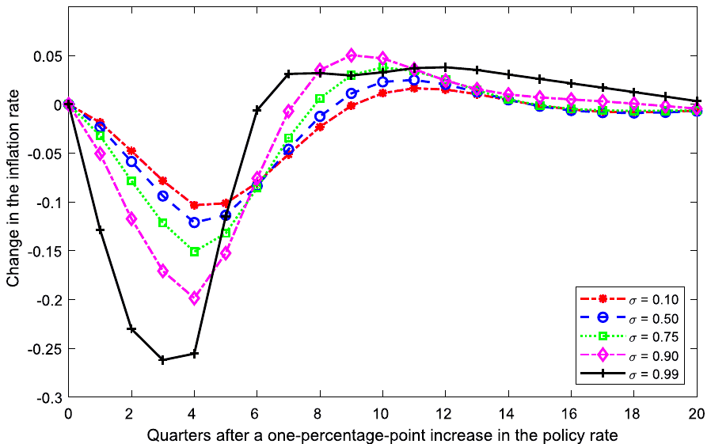
Notes: The figure shows simulated impulse responses of inflation to a monetary policy shock. We use a calibrated version of the SIGMA model of Erceg et al. (2008) developed for the Federal Reserve Board and vary the value of the capital-labor substitution elasticity while leaving other parameters at their original values. The model does not have a stable solution for larger than one.
Aside from convenience, the other reason for the widespread use of the Cobb-Douglas production function is that, at first sight, empirical investigations into the value of the elasticity have produced many central estimates close to 1. When each study gets the same weight, the mean elasticity reported in the literature reaches 0.9—at least based on our attempt to collect all published estimates, in total 3,186 coefficients from 121 studies. But we show that the picture is seriously distorted by publication bias. After correcting for the bias, the mean reported elasticity shrinks to 0.5. This correction alone can imply halving the effectiveness of monetary policy in a structural model, as shown by Fig. 1.
The finding of strong publication bias predominates in our results. The bias arises when different estimates have a different probability of being reported depending on sign and statistical significance. The identification builds on the fact that almost all econometric techniques used to estimate the elasticity assume that the ratio of the estimate to its standard error has a symmetrical distribution, typically a t-distribution. So the estimates and standard errors should represent independent quantities. But if statistically significant positive estimates are preferentially selected for publication, large standard errors (given by noise in data or imprecision in estimation) will become associated with large estimates. Because researchers command plenty of degrees of freedom in estimation design, a large estimate of the elasticity always emerges if the researcher looks for it long enough, and an upward bias in the literature arises. A useful analogy appears in McCloskey and Ziliak (2019), who liken publication bias to the Lombard effect in psychoacoustics: speakers increase their effort in the presence of noise. Apart from linear techniques based on the Lombard effect, we employ recently developed methods by Ioannidis et al. (2017), Andrews and Kasy (2019), Bom and Rachinger (2019), and Furukawa (2021), which account for the potential nonlinearity between the standard error and selection effort.1
All the aforementioned techniques assume that in the absence of publication bias there is no correlation between estimates and standard errors: meta-analysis has its origins in medicine, where the exogeneity of the standard error is rarely questioned. In economics, however, the standard error can be endogenous for three reasons: it is itself an estimate (measurement error), publication bias may work through reporting artificially high precision (reverse causality), and some unobserved method choices may systematically influence both the point estimate and the corresponding standard error (omitted variables). No technique commonly used in economics meta-analyses allows us to get rid of the assumption. We employ study fixed effects, which filter out between-study differences, likely the most important source of endogeneity. We also employ the number of estimates as an instrument for the standard error, but some method choices can still be correlated with the size of the data set in primary studies.
A more fundamental solution is provided by psychology, where the newly developed p-uniform* technique (van Aert and van Assen, 2021) analyzes the distribution of p-values instead of estimates and standard errors. The foundation of p-uniform* is the statistical principle that p-values are uniformly distributed at the mean underlying effect size: that is, when testing the hypothesis that the estimated coefficient equals the underlying effect. The idea of p-uniform* is to find a coefficient at which the distribution of p-values is approximately uniform; this is done by recomputing the reported p-values for different possible values of the underlying effect and then comparing the resulting distribution to the uniform one. Following this principle, the technique's test for publication bias evaluates whether p-values are uniformly distributed at the precision-weighted mean reported in the literature. All tests, including p-uniform*, suggest strong publication bias that substantially exaggerates the mean reported elasticity.
The studies in our dataset do not estimate a single population parameter; rather, the precise interpretation of the elasticity differs depending on the context in which authors derive their results. We collect 71 variables that reflect the different contexts and find that our conclusions regarding publication bias hold when we control for context. Because of the richness of the literature on the elasticity of substitution, we face substantial model uncertainty with many controls and address it by using Bayesian (Eicher et al., 2011; Steel, 2020) and frequentist (Hansen, 2007; Amini and Parmeter, 2012) model averaging. We investigate how the estimated elasticities depend on publication bias and the data and methods used in the analysis. Our results suggest that three factors drive the heterogeneity in the literature: publication bias (the size of the standard error), source of variation in input data (cross-country vs. industry-level variation), and identification approach (whether or not information from the first-order condition for capital is accounted for). Estimations using systems of equations tend to deliver results similar to those of single-equation approaches focused on the first-order condition for capital. In addition, the normalization of the production function used in recent studies typically brings much smaller reported elasticities, by 0.3 on average. We also find that different assumptions regarding technical change have little systematic effect on the reported elasticity.
As the bottom line of our analysis, we construct a hypothetical study that uses all the estimates reported in the literature but assigns more weight to those that are arguably better specified. The result represents a mean estimate implied by the literature but conditional on the absence of publication bias, use of best-practice methodology, and other aspects related to quality (such as publication in a leading journal or a large number of citations). In this way we obtain an elasticity of 0.3 with an upper bound of the 95% confidence interval at 0.6. Though certainly not the definitive point estimate for the elasticity, it is the best guess we can make when looking at half a century of accumulated empirical evidence.
Defining best-practice methodology is subjective, and different authors will have different preferences on study design. But to arrive at 0.3, it is enough to hold two preferences: i) using variation across industries is superior to using variation across countries (which is substantiated, e.g., by Nerlove, 1967; Chirinko, 2008) and ii) including information from the first-order condition for capital is superior to ignoring it (and, for example, focusing exclusively on the first-order condition for labor). To put these numbers into perspective, we once again turn to the Fed's SIGMA model, which employs a value of 0.5 for the elasticity of substitution (Erceg et al., 2008). This calibration corresponds to the mean estimate in the literature corrected for publication bias, without discounting any estimates based on data and methodology. The model employed by the Bank of Finland (Kilponen et al., 2016), on the other hand, uses the elasticity of 0.85, which is close to the mean estimate in the literature without correction for publication bias. The calibration closest to our final result is that of Cantore et al. (2015), who use a prior of 0.4. Their posterior estimate is even lower, though, at below 0.2.
The elasticity of substitution between capital and labor is central to a host of problems aside from monetary policy. Our understanding of long-run growth depends on the value of the elasticity (Solow, 1956). The sustainability of growth in the absence of technological change is contingent on whether the elasticity of substitution exceeds one (Antras, 2004). Klump and de La Grandville (2000) suggest that a larger elasticity of substitution in a country results in higher per capita income. Turnovsky (2002) argues that a smaller elasticity leads to faster convergence. Nekarda and Ramey (2013) argue that the countercyclicality of the price markup over marginal cost also depends on the elasticity of substitution. The elasticity represents an important parameter in analyzing the effects of fiscal policies, including the effect of corporate taxation on capital formation, and in determining optimal taxation of capital (Chirinko, 2002).
But perhaps most prominently, the elasticity of substitution is a key parameter in the literature on the labor share. The evidence of a declining labor share has in fact revived general interest in estimating the elasticity because some of the explanations depend critically on the value of the elasticity (). Oberfield and Raval (2014) categorize these explanations into two groups: (1) mechanisms decreasing the labor share via changing factor prices and (2) mechanisms decreasing the labor share via changing technology. Regarding group (1), the explanations put forward by Piketty (2014) and Karabarbounis and Neiman (2014) hold only when the elasticity surpasses one. Then the global decline in the labor share can be attributed to an increasing capital-labor ratio, either via capital deepening (Piketty, 2014) or as a response to falling investment prices (Karabarbounis and Neiman, 2014). With , however, declining prices of capital and increased capital accumulation raise the labor share. Yet, as we show in this paper, is consistent with the bulk of the empirical estimates of the elasticity. In this context, Glover and Short (2020a) assert that capital deepening cannot explain the observed decline; they point to issues that led to the high elasticity estimates of Karabarbounis and Neiman (2014). Regarding group (2), alternative explanations stress changes in automation, offshoring, directed technological change (as in Oberfield and Raval, 2014; Eden and Gaggl, 2015; Koh et al., 2016), a slowdown in labor productivity (as in Grossman et al., 2017), a rise in concentration (Autor et al., 2017), and demographic changes (Glover and Short, 2020b); explanations that do not hinge on high values of .
The elasticity also has important effects on the short-run dynamics of the labor share. This channel can be illustrated by computing the response of the labor share to a labor-augmenting technology shock, as we do in Fig. 2 based on the model developed by Cantore et al. (2014) and Cantore et al. (2015). In the case of the Cobb-Douglas production function the labor share remains constant, while with the share decreases after a labor-augmenting shock. As the figure illustrates, the response is highly sensitive to changes in . A model with a lower elasticity, consistent with our results, is able to match the actual dynamics of the data on the labor share better than the Cobb-Douglas case (Cantore et al., 2015).
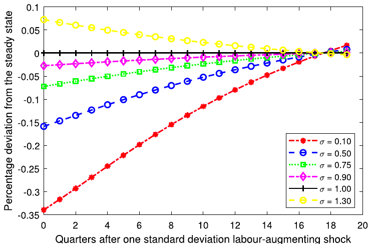
Notes: The figure shows simulated impulse responses of the labor share to a labor-augmenting technology shock. We use the model developed by Cantore et al. (2014) and Cantore et al. (2015).
The remainder of the paper is structured as follows: Section 2 briefly discusses how the elasticity of substitution is estimated; Section 3 describes how we collect estimates of the elasticity from primary studies and provides a bird's-eye view of the data; Section 4 examines publication bias; Section 5 investigates the drivers of heterogeneity in the reported elasticities and calculates the mean elasticity implied by best practice in the literature; Section 6 concludes the paper. Appendix A illustrates the working of publication bias and basic meta-analysis tools via a Monte Carlo simulation. The data, code, additional details, and robustness checks are available in an online appendix at meta-analysis.cz/sigma.
2. Estimating the elasticity
To set the stage for data collection and identification of factors driving heterogeneity in results, we provide a short description of the most common approaches to estimating the elasticity of substitution between capital and labor. The concept was introduced by Hicks (1932) and almost simultaneously and independently by Robinson (1933), whose more popular definition treats the elasticity as a percentage change of the ratio of two production factors divided by the percentage change of the ratio of their marginal products. Under perfect competition, both inputs are paid their marginal products, so the elasticity of substitution can be written as
where and denote capital and labor, is the rental price of capital, and is the wage rate. Under a quasiconcave production function the elasticity attains any number in the interval . If , capital and labor are perfect complements, always used in a fixed proportion in the Leontief production function. If the elasticity lies in the interval , capital and labor form gross complements. If , the production function becomes Cobb-Douglas, and the relative change in quantity becomes exactly proportional to the relative change in prices. If the elasticity lies in the interval , capital and labor form gross substitutes.
Although the concept of the elasticity of substitution was introduced in the 1930s, empirical estimates were only enabled by an innovation that came more than 20 years later: the introduction of the constant elasticity of substitution (CES) production function by Solow (1956), later popularized by Arrow et al. (1961). The CES production function can be written as
where denotes the elasticity of substitution, and are capital and labor, is an efficiency parameter, and is a distributional parameter. The fraction is often labeled as , a transformation of the elasticity called the substitution parameter. and denote the level of efficiency of the respective inputs, and variations in and over time reflect capital- and labor-augmenting technological change. When , technological change becomes Hicks-neutral, which means that the marginal rate of substitution does not change when an innovation occurs.
The CES production function is nonlinear in parameters, and in contrast to the Cobb-Douglas case, a simple analytical linearization does not emerge. Thus the CES production function can be estimated (i) in its nonlinear form, (ii) in a linearized form as suggested by Kmenta (1967), or (iii) by using first-order conditions (FOCs). Kmenta (1967) introduced a logarithmized version of Equation (2) with Hicks-neutral technological change:
and then applied a second-order Taylor series expansion to the term around the point to arrive at a function linear in :
Estimation of via first-order conditions was first suggested by Arrow et al. (1961). The underlying assumptions involve constant returns to scale and fully competitive factor and product markets. The FOC with respect to capital can be written as follows:
Consequently, the FOC with respect to labor implies
where is the price of the output. Both conditions can be combined to yield
In a similar way, one can derive FOCs with respect to the labor share , capital share , or their reversed counterparts. The FOCs can be estimated separately as single equations, within a system of two or three FOCs, and as a system of FOCs coupled with a nonlinear or linearized CES production function. The latter approach (also called a supply-side system approach) has become especially popular in recent studies. León-Ledesma et al. (2010) assert that using the supply-side system approach dominates one-equation estimation, especially when coupled with cross-equation restrictions and normalization, which was suggested by de La Grandville (1989) and Klump and de La Grandville (2000). After scaling technological progress so that , the normalized production function can be written as
where denotes the capital income share evaluated at the point of normalization. The point of normalization can be defined, for instance, in terms of sample means. In other words, normalization means rewriting the production function in an indexed number form (Klump et al., 2012).
Though the aforementioned approaches to estimating the elasticity dominate the literature, we also consider other approaches, in particular the translog production function. The translog function is quadratic in the logarithms of inputs and outputs and provides the second-order approximation to any production frontier (omitting now subscript for ease of exposition):
where denotes the state of technological knowledge, and and are inputs, in our case capital and labor. The translog production frontier provides a wider set of options for substitution and transformation patterns than a frontier based on the CES production function. Due to the duality principle, researchers often employ the translog cost function instead:
where denotes total costs, , and is input factor price (that is, and ). Using Sheppard's lemma, the following cost share functions can be derived:
where denotes the share of the -th factor in total costs. In this case, Allen partial elasticities of substitution are most often estimated and are defined as
We include estimates from all of the aforementioned specifications, as each of them provides a measure of the elasticity of substitution between capital and labor, broadly defined. Then we control for the various aspects of the context in which researchers obtain their estimates. These aspects are presented and discussed in detail later in Section 5, while the following section describes the dataset of the estimated elasticities.
3. Data
We use Google Scholar to search for studies estimating the elasticity. Google's algorithm goes through the full text of studies, thus increasing the coverage of suitable published estimates, irrespective of the precise formulation of the study's title, abstract, and keywords. Our search query, available in the online appendix, is calibrated so that it yields the best-known relevant studies among the first hits. We examine the first 500 papers returned by the search. In addition, we inspect the lists of references in these studies and their Google Scholar citations to check whether we can find usable studies not captured by our baseline search—a method called "snowballing" in the literature on research synthesis. We follow the guidelines for meta-analysis in economics by Havranek et al. (2020). We terminate the search on August 1, 2018, and do not add any new studies beyond that date.
To be included in our dataset, a study must satisfy three criteria. First, at least one estimate in the study must be directly comparable with the estimates described in Section 2. Second, the study must be published. This criterion is mostly due to feasibility since even after restricting our attention to published studies the dataset involves a manual collection of hundreds of thousands of data points. Moreover, we expect published studies to exhibit higher quality on average and to contain fewer typos and mistakes in reporting their results. Note that the inclusion of unpublished papers is unlikely to alleviate publication bias (Rusnak et al., 2013): researchers write their papers with the intention to publish.2 Third, the study must report standard errors or other statistics from which the standard error can be computed. If the elasticity is not reported directly, but can be derived from the presented results, we use the delta method to approximate the standard error. Omitting the estimates with approximated standard errors does not change our results up to a second decimal place.
Using the search algorithm and inclusion criteria described above, we collect 3,186 estimates of the elasticity of substitution from 121 studies. To our knowledge, this makes our paper the largest meta-analysis conducted in economics so far: Doucouliagos and Stanley (2013), for example, survey dozens of meta-analyses and find that the largest one uses 1,460 estimates. Ioannidis et al. (2017) report that the mean number of estimates used in economics meta-analyses is 400. The literature on the elasticity of substitution is vast, with a long tradition spanning six decades and more than 100 countries. The list of the studies we include in the dataset (we call them "primary studies") is available in the online appendix. Out of the 121 studies, 19 are published in the five leading journals in economics. Altogether, they have received more than 20,000 citations in Google Scholar, highlighting the importance of the topic.
The mean reported estimate of the elasticity of substitution is 0.9 when we give the same weight to each study; that is, when we weight the estimates by the inverse of the number of observations reported per study. A simple mean of all estimates is 0.8. We consider the weighted mean to be more informative, because the simple mean is driven by studies that report many estimates, typically the results of robustness checks, and we see little reason to place more weight on such studies. For both such constructed means, in any case, the deviation from the Cobb-Douglas specification is not dramatic, and one could use the mean estimate from the literature as a justification of why the Cobb-Douglas production function presents a solid approximation of the data. We will argue that such an interpretation of the literature misleads the reader because of publication bias and misspecifications in the literature.
Fig. 3 shows the distribution of the estimates. Curiously, the distribution is bimodal, with peaks near 0 and slightly under 1, pointing to strong and systematic heterogeneity among the estimates. Three-quarters of the estimates lie between 0 and 1, 21% are greater than one, and only 4% attain a theoretically implausible negative value. At first sight it is apparent that a researcher wishing to calibrate her structural model can find some empirical justification for any value of the elasticity between 0 and 1.5. There are a few extreme outliers in the data, thus we winsorize the estimates at the 5% level (our main results hold with different winsorization levels). In Fig. 4 we show the box plot of the estimates. Not only do elasticities vary across studies, but also within studies. Most studies report at least some estimates close to 1, giving further (but superficial, as we will show later) credence to the Cobb-Douglas specification.
Apart from the estimates of and their standard errors, we collect 71 variables that capture the context in which different estimates are obtained. In consequence, we had to collect more than 220,000 data points from primary studies—a laborious but complex exercise. The data were collected by two of the coauthors of this paper, each of whom then double-checked random portions of the data collected by the other coauthor in order to minimize potential mistakes arising from manually coding so many entries. The entire process took seven months, and the final dataset is available in the online appendix. Out of the 71 variables that we collect, 50 are included in the baseline model, while the rest only appear in the subsamples of the data for which they apply.
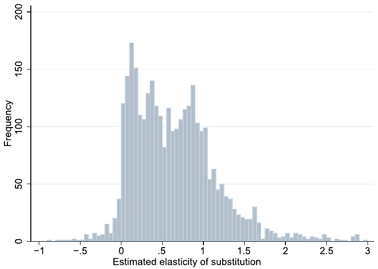
Notes: Estimates smaller than −1 and larger than 3 are excluded from the figure for ease of exposition but included in all statistical tests.
A casual look at the estimates reveals systematic differences among the reported elasticities derived from different data and identified using different methodologies. The most striking patterns are shown in Fig. 5. For instance, while the mean of the estimates coming from the first-order condition for capital is 0.4, for the first-order condition for labor the mean is twice as much. The mean of the elasticities based on time series data is 0.5, while for cross-sectional data it reaches 0.8. Estimates based on industry-level data appear to be systematically smaller than those based on country-level data, and elasticities presented for individual industries are on average larger than aggregated estimates. These patterns may explain the bimodality of the overall histogram presented in Fig. 3. Nevertheless, at this point we cannot be sure whether the differences are fundamental or whether they reflect correlations with other factors. A detailed analysis of heterogeneity is available in Section 5. Some of the differences among the estimates can also be attributable to publication bias, an issue to which we turn next.
4. Publication bias
Theory and intuition provides little backing for a zero or negative elasticity of substitution between capital and labor, so it seems natural to discard such estimates. Previous researchers (most prominently, Ioannidis et al., 2017) have shown that such a censoring distorts inference drawn from the literature,3 and here we document that publication bias is strong in the case of the elasticity of substitution. Even when the true elasticity is positive in every single estimation context, given sufficient noise in data and methods both negative and zero (statistically insignificant) estimates will appear. For each individual author who obtains such estimates, it makes little sense to focus on them; it will bring their study closer to the truth if they find and highlight a specification that yields a clearly positive elasticity. The problem is that noise in data and methods will also produce estimates that are much larger than the true effect, and such estimates are hard to identify: no upper threshold symmetrical to zero exists that would tell the researcher the estimates are implausible. If many small imprecise estimates are discarded but many large imprecise estimates are reported, an upward bias arises on average. Thus a paradox arises: publication bias can be beneficial at the micro level of individual studies, but is detrimental at the macro level of the entire literature. Ioannidis et al. (2017) document that the typical exaggeration due to publication bias in economics is twofold. We find it remarkable that no study has addressed potential publication bias in the literature on the elasticity of substitution between capital and labor, one of the most important parameters in economics.
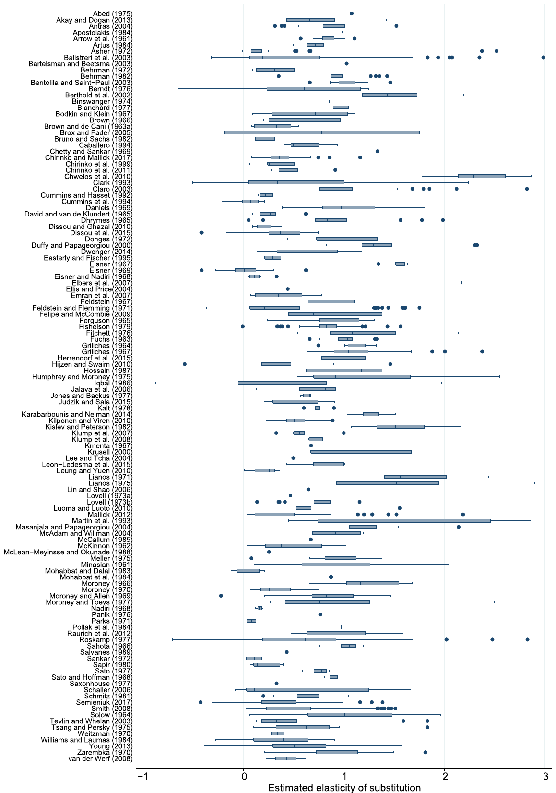
Notes: The figure shows a box plot of the estimates of the elasticity of substitution reported in individual studies. The box shows interquartile range (P25–P75) and the median highlighted. Whiskers cover (P25 − 1.5* interquartile range) to (P75 + 1.5* interquartile range). The dots are remaining (outlying) estimates. Estimates smaller than −1 and larger than 3 are excluded from the figure for ease of exposition but included in all statistical tests.
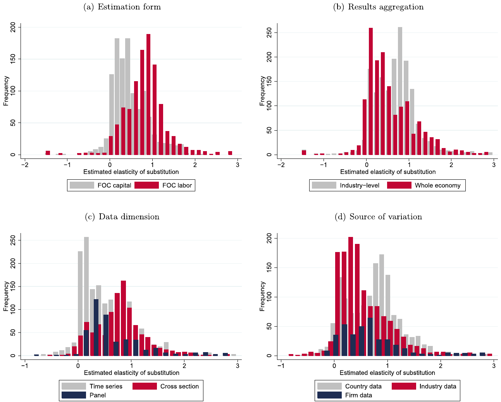
Notes: FOC = first-order condition. Estimates smaller than −1 and larger than 3 are excluded from the figure for ease of exposition but included in all statistical tests.
Fig. 6 provides a graphical illustration of the mechanism outlined in the previous paragraph. In the scatter plot the horizontal axis measures the magnitude of the estimated elasticities, and the vertical axis measures their precision. In the absence of publication bias, the scatter plot will form an inverted funnel: the most precise estimates will lie close to the true mean elasticity, imprecise estimates will be more dispersed, and both small and large imprecise estimates will appear with the same frequency. (The scatter plot is thus typically called a funnel plot, Stanley and Doucouliagos 2010.) The figure shows the predicted funnel shape, still with plenty of heterogeneity at the top—but also shows asymmetry. For the funnel to be symmetrical, and hence consistent with the absence of publication bias, we should observe many more reported negative and zero estimates. In Appendix A we use a simple Monte Carlo simulation to further explain the mechanism of publication bias and the baseline meta-analysis estimators we use.
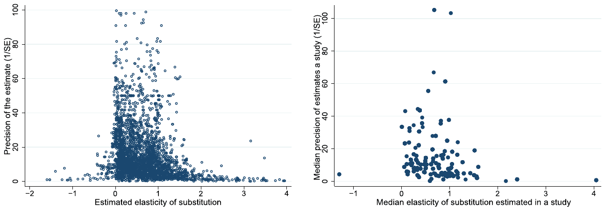
Notes: In the absence of publication bias the scatter plot should resemble an inverted funnel symmetrical around the most precise estimates. The left panel shows all estimates, the right panel shows median estimates from each study. Estimates smaller than −2 and larger than 4 (together with precision values above 100 in the left panel) are excluded from the figure for ease of exposition but included in all statistical tests.
4.1. Baseline methods
To identify publication bias numerically, we refer to the analogy with the Lombard effect mentioned in the Introduction: other things being equal, under publication bias authors will increase their effort (specification search) in response to noise (imprecision resulting from data or methodology). Thus publication bias is consistent with finding a correlation between estimates of the elasticity and their standard errors. In contrast, if there is no bias, there should be no correlation, because the properties of the techniques used to obtain the elasticity ensure that the ratio of the estimate to its standard error has a t-distribution. It follows that estimates and standard errors should be statistically independent quantities. In any case, the intercept in the regression of the estimated elasticities on their standard errors can be interpreted as the mean elasticity corrected for potential publication bias (Stanley, 2005). It represents the mean elasticity conditional on the standard error approaching zero, and because in this specification publication bias forms a linearly increasing function of the standard error, the intercept measures the corrected estimate. The coefficient on the standard error measures publication bias and can be thought of as a test of the asymmetry of the funnel plot. So we have
where is the -th estimated elasticity in study , denotes the intensity of publication bias, and represents the mean elasticity corrected for the bias.
| OLS | FE | BE | Precision | Study | |
|---|---|---|---|---|---|
| SE | 0.881*** | 0.656*** | 1.111*** | 0.755*** | 0.888*** |
| Publication bias | (0.086) | (0.201) | (0.190) | (0.190) | (0.094) |
| [0.49; 1.21] | — | — | [0.12; 1.40] | [0.62; 1.22] | |
| Constant | 0.492*** | 0.529*** | 0.499*** | 0.484*** | 0.544*** |
| Mean beyond bias | (0.028) | (0.033) | (0.048) | (0.028) | (0.039) |
| [0.38; 0.61] | — | — | [0.39; 0.66] | [0.44; 0.64] | |
| Studies | 121 | 121 | 121 | 121 | 121 |
| Observations | 3,186 | 3,186 | 3,186 | 3,186 | 3,186 |
Notes: The table presents the results of regression . and are the -th estimates of elasticity of substitution and their standard errors reported in the -th study. The standard errors of the regression parameters are clustered at both the study and country level and shown in parentheses (the implementation of two-way clustering follows Cameron et al., 2011). OLS = ordinary least squares. FE = study-level fixed effects. BE = study-level between effects. Precision = the inverse of the reported estimate's standard error is used as the weight. Study = the inverse of the number of estimates reported per study is used as the weight. ***, **, and * denote statistical significance at the 1%, 5%, and 10% level. Standard errors in parentheses. Whenever possible, in square brackets we also report 95% confidence intervals from wild bootstrap clustering; implementation follows Roodman (2019), and we use Rademacher weights with 9999 replications.
In Table 1 we report the results of several specifications based on Equation (13). We cluster standard errors at both the study and the country level, as estimates are unlikely to be independent within these two dimensions; our implementation of two-way clustering follows Cameron et al. (2011). We also report wild bootstrap confidence intervals (Cameron et al., 2008). In all specifications we find a statistically significant and positive coefficient on the standard error (publication bias) and a significant and positive intercept (the mean elasticity corrected for the bias). After correcting for publication bias, the mean elasticity drops from 0.9 to 0.5.
The first column of Table 1 reports a simple OLS regression. The second column adds study-level fixed effects in order to account for unobserved study-specific characteristics, but little changes. (Adding country dummies would also produce similar results.) The third column uses between-study variance instead of within-study variance, and the estimate of the corrected mean remains not much affected. Next, we apply two weighting schemes. First, precision becomes the weight, as suggested by Stanley and Doucouliagos (2017), which adjusts for the heteroskedasticity in the regression. Similar weights are also used in physics for meta-analyses of particle mass estimates (Baker and Jackson, 2013). The corrected mean elasticity becomes a bit smaller, but not far from 0.5. Second, we weight the data by the inverse of the number of observations reported in a study, so that each study has the same impact on the results. Again, the difference is small in comparison to other specifications.
| Bom and Rachinger (2019) | Furukawa (2021) | Andrews and Kasy (2019) | Ioannidis et al. (2017) | |
|---|---|---|---|---|
| Mean beyond bias | 0.52 | 0.55 | 0.43 | 0.50 |
| (0.09) | (0.21) | (0.02) | (0.06) |
Notes: Standard errors in parentheses. The method developed by Bom and Rachinger (2019) searches for a precision threshold above which publication bias is unlikely. Methods developed by Furukawa (2021) and Andrews and Kasy (2019) are described in detail in the online appendix. The method developed by Ioannidis et al. (2017) focuses on estimates with adequate power.
The simple tests based on the Lombard effect and presented in Table 1 are intuitive but can themselves be biased if publication selection does not form a linear function of the standard error. For example, it might be the case that estimates are automatically reported if they cross a particular precision threshold. This is the intuition behind the estimator due to Bom and Rachinger (2019) presented in Table 2. Bom and Rachinger (2019) show how to estimate this threshold for each literature and introduce an "endogenous kink" technique that extends the linear test based on the Lombard effect. Next, Furukawa (2021) provides a nonparametric method that is robust to various assumptions regarding the functional form of publication bias and the underlying distribution of true effects. Furukawa (2021) suggests using only a portion of the most precise estimates, the stem of the funnel plot, and determines this portion by minimizing the trade-off between variance (decreasing in the number of estimates included) and bias (increasing in the number of imprecise estimates included). The stem-based method is generally more conservative than those commonly used, producing wide confidence intervals; the details are available in the online appendix.
Another nonlinear method to correct for publication bias is advocated by Andrews and Kasy (2019). They show how the conditional publication probability (the probability of publication as a function of a study's results) can be nonparametrically identified and then describe how publication bias can be corrected if the conditional publication probability is known. The underlying intuition involves jumps in publication probability at conventional p-value cut-offs. Using their method, we estimate that positive elasticities are six times more likely to be published than negative ones. We include more details on the approach and estimation in the online appendix. Finally, the remaining estimate in Table 2 arises using the approach championed by Ioannidis et al. (2017), who focus only on estimates with adequate statistical power. We conclude that both linear and nonlinear techniques agree that 0.5 represents a robust estimate of the mean elasticity of substitution after correcting the literature for publication bias. Since the uncorrected mean equals 0.9, the exaggeration due to publication bias is almost twofold, consistent with the rule of thumb suggested by Ioannidis et al. (2017).
4.2. Extensions
Our results presented so far regarding publication bias can be criticized along three main lines. First, the distribution of elasticity estimates in some studies does not have to be symmetrical if the elasticity is not estimated directly but as a function of regression parameters from reduced-form estimations like (4). Such asymmetry in the distribution could give rise to the asymmetry of the funnel plot even in the absence of publication bias. Second, both the estimate and standard error of the elasticity can be jointly influenced by characteristics of data and methods, which would violate the exogeneity assumption and again yield an asymmetrical funnel plot even when no publication bias is present. Third, our tests of publication bias assume that researchers compare their estimates with zero. But other publication hurdles can potentially be more important: departure from the Cobb-Douglas case or other important benchmarks in the literature, such as the estimate of 1.3 by Karabarbounis and Neiman (2014) in the context of the labor share. We thank two referees of this Journal for bringing these important problems to our attention. In the remainder of this section we focus on the linear models of publication bias because they are simpler and we have shown earlier that they bring results similar to the more complex non-linear models.
First, we address the natural asymmetry in the estimates from some studies. Table 3 shows the results of publication bias tests when we exclude all estimates that can potentially be asymmetrically distributed. In other words, we retain only estimates for which the reported regression coefficient can be directly interpreted as the elasticity of substitution (so that no re-computation is needed, neither by us nor by the authors of the primary studies) and at the same time the coefficient features a symmetrical distribution given by the properties of the estimation technique. Doing so restricts our sample to 2,316 estimates from 67 studies, but the results remain remarkably consistent: we find strong upward publication bias and a corrected mean elasticity of about 0.5 or slightly less. Even the most conservative technique in this case, precision weighting with wild bootstrap, gives us an upper bound of the 95% confidence interval at 0.74, safely below the Cobb-Douglas case.
| OLS | FE | BE | Precision | Study | |
|---|---|---|---|---|---|
| SE | 0.976*** | 0.868*** | 1.358*** | 0.752* | 1.019*** |
| Publication bias | (0.167) | (0.317) | (0.271) | (0.396) | (0.132) |
| [−0.23; 1.46] | — | — | [−0.61; 2.13] | [0.59; 1.35] | |
| Constant | 0.459*** | 0.472*** | 0.429*** | 0.455*** | 0.494*** |
| Mean beyond bias | (0.0226) | (0.0408) | (0.0575) | (0.0319) | (0.0354) |
| [0.35; 0.57] | — | — | [0.31; 0.74] | [0.40; 0.60] | |
| Studies | 67 | 67 | 67 | 67 | 67 |
| Observations | 2,316 | 2,316 | 2,316 | 2,316 | 2,316 |
Notes: The table presents the results of regression . and are the -th estimates of elasticity of substitution and their standard errors reported in the -th study. In this specification we only include direct estimates of the elasticity, i.e. the cases in which the regression parameter reported in a paper directly corresponds to the elasticity and no re-computation is needed. The standard errors of the regression parameters are clustered at both the study and country level and shown in parentheses (the implementation of two-way clustering follows Cameron et al., 2011). OLS = ordinary least squares. FE = study-level fixed effects. BE = study-level between effects. Precision = the inverse of the reported estimate's standard error is used as the weight. Study = the inverse of the number of estimates reported per study is used as the weight. ***, **, and * denote statistical significance at the 1%, 5%, and 10% level. Whenever possible, in square brackets we also report 95% confidence intervals from wild bootstrap clustering; implementation follows Roodman (2019), and we use Rademacher weights with 9999 replications.
Second, we address the likely endogeneity of the standard error in some studies. Table 4 presents the results of an instrumental variable (IV) regression and a new technique called p-uniform*. IV presents a crucial robustness check because in primary studies estimates and standard errors are jointly determined by the estimation technique. If some techniques produce systematically larger standard errors and point estimates, our finding of publication bias could be spurious. An intuitive instrument for the standard error is the inverse of the square root of the number of observations used in the primary study: the root is correlated with the standard error by definition but is unlikely to be much correlated with the use of a particular estimation technique. Employing IV in the first column of Table 4 we obtain a larger estimate of publication bias and a smaller estimate of the mean elasticity corrected for publication bias, 0.3, compared to our baseline estimation presented earlier.
| IV | p-uniform* | |
|---|---|---|
| Publication bias | 2.186*** | YES*** |
| (0.413) | (0.005) | |
| [1.20; 3.68] | ||
| Mean beyond bias | 0.279*** | 0.416** |
| (0.0702) | (0.042) | |
| [0.04; 0.47] | [0.01; 0.74] | |
| Studies | 121 | 121 |
| Observations | 3,186 | 3,186 |
Notes: IV = the inverse of the square root of the number of observations employed by researchers is used as an instrument for the standard error. P-uniform* = a technique developed by van Aert and van Assen (2021) and based on the distribution of p-values. For IV, standard errors are clustered at both the study and country level and reported in parentheses. For p-uniform*, p-values are reported in parentheses. For both techniques, the corresponding 95% confidence intervals are reported in square brackets. ***, **, and * denote statistical significance at the 1%, 5%, and 10% level.
The second column of Table 4 presents the results of p-uniform*. The technique was developed by van Aert and van Assen (2021) for standardized coefficients used in psychology, but it can also be applied to regression coefficients. At the heart of p-uniform* lies the statistical principle that p-values should be uniformly distributed at the mean underlying effect size: when testing the hypothesis that the estimated coefficient equals the underlying value of the effect. Publication bias affects some segments of the distribution of p-values (under-representation of large p-values, over-representation of p-values just below 0.05), but not the entire distribution. The idea of p-uniform* is to find a coefficient at which the distribution of p-values is approximately uniform; this is achieved by recomputing the reported p-values for various possible values of the underlying effect and then comparing the resulting distribution to the uniform one. In a similar vein, the technique's test for publication bias evaluates whether p-values are uniformly distributed at the precision-weighted mean reported in the literature. (The technique yields a binary result for the test of publication bias and a corresponding p-value.) Once again we obtain evidence for publication bias; the corrected mean elasticity is 0.4.
Another way to approach the endogeneity problem is to explicitly control for the most likely causes of endogeneity. We do so in Table 5, where we include interactions of the standard error with dummy variables for six study characteristics along with study fixed effects. We focus on the following characteristics: the use of IV, data aggregation, results aggregation, the use of the perpetual inventory method to approximate capital, the use of the translog function, and short-run estimation. For example, studies using IV techniques can be expected to deliver less precision, but at the same time systematically different results if endogeneity is an important issue in the primary literature. If a characteristic is associated with publication bias, or simply with systematically different standard errors that might give a false impression of publication bias, the interaction should prove strong. But we see no such pattern. Of the 12 coefficients for interactions estimated in Table 5, one is significant at the 10% level and one at the 5% level, which could easily arise by chance. Moreover, the coefficient on the non-interacted standard error remains statistically significant in all cases, and the mean beyond bias remains close to our baseline estimates. We thus fail to model the violations of exogeneity (or, alternatively, the sources of publication bias) explicitly.
| Identif. | Data aggr. | Results aggr. | K: perpetual | Translog | Short run | All | |
|---|---|---|---|---|---|---|---|
| SE | 0.649*** | 0.803** | 0.624*** | 0.754*** | 0.664*** | 0.473*** | 0.647** |
| (publication bias) | (0.219) | (0.318) | (0.146) | (0.259) | (0.212) | (0.0903) | (0.247) |
| Constant | 0.512*** | 0.553*** | 0.569*** | 0.551*** | 0.529*** | 0.587*** | 0.613*** |
| (mean beyond bias) | (0.0357) | (0.0420) | (0.0449) | (0.0337) | (0.0321) | (0.0155) | (0.0421) |
| SE * Identification | −0.0323 | 0.0874 | |||||
| (0.332) | (0.263) | ||||||
| SE * Data aggr. | −0.299 | −0.00928 | |||||
| (0.334) | (0.202) | ||||||
| SE * Results aggr. | 0.0616 | −0.169 | |||||
| (0.249) | (0.237) | ||||||
| SE * K: perpetual | −0.334 | −0.285 | |||||
| (0.289) | (0.285) | ||||||
| SE * Translog | −0.127 | −0.0127 | |||||
| (0.344) | (0.312) | ||||||
| SE * Short run | 1.741* | 1.707** | |||||
| (0.885) | (0.846) | ||||||
| Studies | 121 | 121 | 121 | 121 | 121 | 121 | 121 |
| Observations | 3,186 | 3,186 | 3,186 | 3,186 | 3,186 | 3,186 | 3,186 |
Notes: Study-level fixed effects and non-interacted variables are included but not reported. Standard errors are reported in parentheses and clustered at the study and country level. Identification = 1 if instrumental variables are used for identification. Data aggregation = 1 if state or country aggregation is used for input data. Results aggregation = 1 if the reported elasticity corresponds to an aggregate one (in contrast to elasticities corresponding to industries disaggregated at least at the 2-digit level). K: perpetual = 1 if input data for capital are measured via the perpetual inventory method. Translog = 1 if the elasticity is estimated using the translog functional form. Short run = 1 if the coefficient is taken from an explicitly short-run specification. ***, **, and * denote statistical significance at the 1%, 5%, and 10% level.
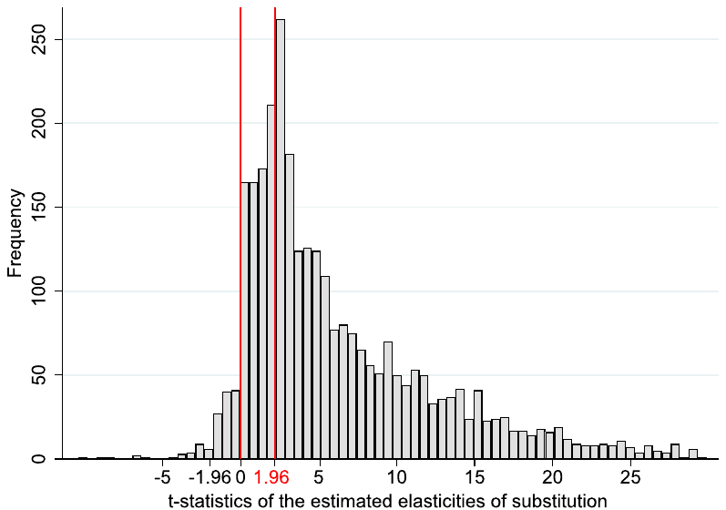
Notes: Outliers are excluded from the figure but included in all tests.
The exogeneity assumption can also be relaxed by using the caliper test (Gerber and Malhotra, 2008), which moreover allows us to address the third main issue of our baseline approach, the focus on the zero threshold. The caliper test uses the simple idea that publication bias is the best explanation for sudden jumps in the distribution of the t-statistic. In a narrow caliper around 1.96, for example, the number of t-statistics reported above the threshold should equal the number of t-statistics below the threshold. If the former significantly outweigh the latter, we conclude publication bias likely plagues the literature. The distribution of t-statistics (Fig. 7) does indeed show conspicuous jumps: at 0 and 1.96. The jump at 0 is so large that no statistical tests are necessary to conclude that negative estimates are discriminated against, either due to bias or a rational tendency not to report nonsensical results. In Table 6 we test the threshold of 1.96, which is associated with statistical significance at the 5% level. In a narrow caliper of 0.05 (corresponding to t-statistics between 1.935 and 1.985), estimates above the threshold outnumber those below the threshold 30 to 9. The difference remains statistically significant with wider calipers.
| Full sample | Labor share | Base at 1 | |
|---|---|---|---|
| Upper threshold | Lower threshold | Lower threshold | |
| Caliper width = 0.05 | 0.277*** | ||
| (0.067) | |||
| N = 39 | |||
| Caliper width = 0.1 | 0.165*** | −0.248 | |
| (0.056) | (0.251) | ||
| N = 71 | N = 4 | ||
| Caliper width = 0.15 | 0.139*** | −0.236 | |
| (0.049) | (0.197) | ||
| N = 96 | N = 6 | ||
| Caliper width = 0.2 | 0.098*** | −0.236 | |
| (0.041) | (0.197) | ||
| N = 142 | N = 6 | ||
| Caliper width = 0.25 | 0.071** | −0.317** | 0.322** |
| (0.037) | (0.137) | (0.156) | |
| N = 177 | N = 9 | N = 7 | |
| Caliper width = 0.3 | 0.088*** | −0.338** | 0.244* |
| (0.033) | (0.123) | (0.165) | |
| N = 221 | N = 10 | N = 8 | |
| Caliper width = 0.35 | 0.107*** | −0.185 | 0.266* |
| (0.030) | (0.140) | (0.150) | |
| N = 258 | N = 12 | N = 9 | |
| Caliper width = 0.4 | 0.106*** | −0.128 | 0.266* |
| (0.029) | (0.140) | (0.150) | |
| N = 292 | N = 13 | N = 9 | |
| Caliper width = 0.45 | 0.071*** | −0.080 | 0.331** |
| (0.027) | (0.137) | (0.125) | |
| N = 326 | N = 14 | N = 10 | |
| Caliper width = 0.5 | 0.061** | −0.080 | 0.315** |
| (0.026) | (0.137) | (0.117) | |
| N = 353 | N = 14 | N = 12 |
Notes: The table reports the results of the caliper test by Gerber and Malhotra (2008). The test compares the relative frequency of estimates above and below an important threshold for the t-statistic; with a sufficiently narrow caliper, there should be no difference. We use calipers of different sizes depending on the number of observations available. A test statistic of 0.139, for example, means that 63.9% estimates are above the threshold and 36.1% estimates are below the threshold. Standard errors are reported in parentheses and clustered at the study level. In the first column (full sample) the original reported t-statistics are evaluated. In the second column (labor share) only estimates from papers about the labor share are used, and t-statistics are recomputed to reflect the hypothesis . In the third column (base at 1) we include only reduced-form estimates for which an estimated regression parameter of zero translates to an elasticity of 1; the t-statistics of the elasticity are recomputed to reflect the hypothesis . N = number of estimates. The missing values for some calipers indicate no estimates available for the caliper. ***, **, and * denote statistical significance at the 1%, 5%, and 10% level.
In the second and third column of Table 6 we adapt the caliper test to examine publication hurdles other than zero and 5% statistical significance with respect to zero. We focus on two values: 1.3, which is an important benchmark result by Karabarbounis and Neiman (2014), and 1, which corresponds to the Cobb-Douglas case and also the baseline noisy estimate for many regression equations like (4) or those that test the FOC of labor shares. Some studies do explicitly compare their estimates to these benchmarks; for the rest we recompute the t-statistics so that they correspond to this new hypothesis. We ask whether statistical (in)significance of the differences from the benchmarks influences the probability of reporting the estimate. Regarding the value 1.3, we restrict our attention to estimates derived in papers on the labor share because the estimate by Karabarbounis and Neiman (2014) is relevant especially in this context (though the result would hold if all estimates were used). We see little effect of the threshold. Next, when examining the Cobb-Douglas case we include only reduced-form estimates for which a zero regression coefficient translates to an elasticity of 1. The fact that a noisy and small regression coefficient implies a unitary elasticity may affect the mechanism of publication bias, but the caliper test result would hold if we included all the estimates. Here we obtain significant results: estimates that are just consistent with the Cobb-Douglas case are reported more often than those that are significantly smaller than unity at the 5% level. Thus we find evidence of publication bias against three thresholds: positive sign, statistical significance with respect to zero at the 5% level, and consistency with the Cobb-Douglas production function.
Finally, a useful exercise is to focus on the estimates that cannot be negative by the definition of the corresponding nonlinear identification approach. In this subset of estimates any potential publication bias will stem exclusively from the preference of authors, editors, or referees for statistically significant results. Since the nonlinear estimates must be positive, there is no space for the preferential selection of a theory-consistent sign—a type of selection that can potentially be beneficial if negative estimates of the elasticity are caused by misspecifications more often than by chance. Unfortunately there are only 13 studies reporting 131 estimates that were obtained using nonlinear techniques, and such a small dataset limits the power of publication bias tests. Moreover, with nonlinear estimation (and thus an asymmetrical distribution of estimates in the absence of publication bias) the exogeneity condition for the standard error is automatically violated, which means p-uniform* is the only credible technique we can employ in this case. The technique gives us an estimate of the corrected mean elasticity at 0.45 (with the 95% confidence interval from 0.04 to 0.83) compared to the uncorrected mean of 0.71 when all studies are assigned the same weight. Therefore, while statistically insignificant at the 5% level, publication bias still exaggerates the mean reported nonlinear estimate by about 60%, compared to about 80% for the entire sample. We conclude that most of what we identify as publication bias is driven by the selection of convenient or seemingly important results, not by improving model specification.
5. Heterogeneity
In the previous section we have shown that when we give the same weight to all approaches used in primary studies, the empirical literature as a whole provides no support for the Cobb-Douglas production function. But perhaps poor data and misspecifications bias the mean estimate downwards. We investigate this issue here. In Section 2 and Section 3 we discussed several prominent aspects of study design that might systematically influence the reported estimates of the elasticity. But many additional study characteristics can certainly play a role, and we need to control for them. To assign a pattern to the apparent heterogeneity in the literature, we collect 71 variables that reflect the context in which researchers obtain their estimates. The variables capture the characteristics of the data, specification choice, econometric approach, definition of the production function, and publication characteristics. The variables, grouped in these categories, are discussed below and listed in the online appendix together with their definitions and summary statistics.
5.1. Variables
5.1.1. Data characteristics
A central distinguishing feature of the studies concerns the source of variation. Almost half (45%) of the studies exploit variation across country or state-level, which forms our reference category. We include dummy variables equal to one if the study exploits variation across industries (43% of the estimates) or firms (12% of the estimates). Nerlove (1967) suggests that exploiting cross-country variation, where there may be systematic correlation between efficiency levels, product prices and wages, can lead to an upward bias in the estimated elasticity. Moreover, Chirinko (2008) discusses several drawbacks of cross-country variation in comparison to firm or industry-level variation, including limited variation available for identification and unaccounted heterogeneity.
We also include a dummy equal to one when the resulting estimate is reported at a very disaggregated level for various industries. Moreover, we add controls for potential cross-country differences: a dummy for the US, developed European countries, and developing countries, as the substitutability between capital and labor may differ with the level of economic development and across institutional settings. For instance, Duffy and Papageorgiou (2000) suggest that capital and labor become less substitutable in poorer countries.
To account for potential small-sample bias, we control for the number of observations used in each study. We also include the midpoint of the data period to capture a potential positive trend in the elasticity over time, which could be due to economic development within a country, a changing composition of the inputs, or changes in their relative efficiency (Cantore et al., 2017). Regarding data frequency, 89% of the estimates employ annual data; we thus use annual data as the baseline category and include a dummy variable for the use of quarterly data. Moreover, we control for data dimension—whether time series, cross-sectional, or panel data are used. Most of the studies employ time series data (around 53%), which we take as the reference category.
The final subset of variables covering data characteristics describes the source of data. Many estimates are based on data from the same databases—the largest number of studies employ data from the US Annual Survey of Manufactures and Census of Manufacturers. The second largest group is the KLEM database by Jorgenson (2007), followed by the OECD's International Sectoral Database and Structural Analysis Database. We do not have a prior on how data sources should affect estimates, yet still prefer not to ignore this potential source of differences in results and include the corresponding dummies as control variables.
5.1.2. Specification
Concerning the specification of the various studies described in Section 2, we distinguish between estimation via single first-order conditions (FOCs); systems of more than one FOC; systems of the production function plus FOCs; linear approximations of the production function; and nonlinear estimation of the production function. We also discriminate between the FOC for labor based on the wage rate, FOC for capital based on the rental rate of capital, FOC for the capital-labor ratio based on the ratio between the wage rate and the rental rate of capital, FOC for capital share, and FOC for labor share in income. In total, this gives us nine distinct categories for estimation specification. We choose the FOC for capital based on the rental rate as the reference category because it represents the most frequently used specification (35%), though closely followed by the FOC for labor based on the wage rate (33% of estimates). A special case of the FOC for capital is its inverse estimation, in which the resulting estimates are labeled user-cost elasticities; examples include Smith (2008) and Chirinko et al. (2011).
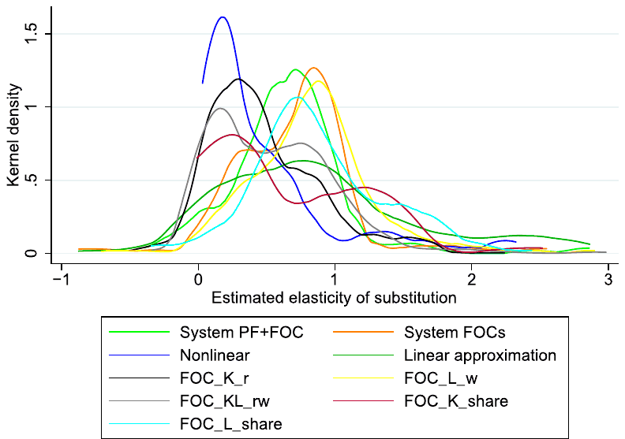
Notes: A detailed description of the variables is available in the online appendix.
The differences in estimates derived from the various specifications are clearly visible in the data (Fig. 8). While the mean of the estimates derived from the FOC for labor based on the wage rate reaches 1.1, estimates derived from the FOC for capital based on the rental rate of capital are on average only 0.5. Estimates obtained from the linear approximation of the production function also stand out, reaching a mean value of 1.1. Some of these patterns were noted early in the history of the estimation of the elasticity, for example, by Berndt (1976), and later discussed by Antras (2004) and Young (2013). We attempt to quantify the patterns, while simultaneously controlling for other influences.
Regarding system estimations, two other important specification aspects can influence the reported elasticities: normalization and cross-equation restrictions. Normalization, suggested by de La Grandville (1989), further explored by Klump and de La Grandville (2000), and first implemented empirically by Klump et al. (2007), has been used by only a small fraction of the studies in our database. Normalization starts from the observation that a family of CES functions whose members are distinguished only by different elasticities of substitution needs a common benchmark point. Since the elasticity of substitution is defined as a point elasticity, one needs to fix benchmark values for the level of production, factor inputs, and the marginal rate of substitution, or equivalently for per capita production, capital deepening, and factor income shares. Normalization essentially implies representing the production function in a consistent indexed number form. A proper choice of the point of normalization facilitates the identification of deep technical parameters. According to León-Ledesma et al. (2010), the superiority of the system estimation compared to the single FOC approach is further enhanced when complemented with normalization. In their Monte Carlo experiment they show that without normalization, estimates tend towards one.
Some estimations of systems employ cross-equation restrictions that restrict parameters across two or more equations to be equal, as in Zarembka (1970), Krusell et al. (2000), and Klump et al. (2007). To account for possible differences, we additionally include a dummy for cross-equation restrictions.
While the vast majority of estimates come from single-level production functions, estimates of the elasticity of substitution between capital and labor can also be found in studies using two-level production functions, including additional inputs such as energy and material, (e.g., Van der Werf, 2008; Dissou et al., 2015). We control for two-level production functions as a special case. Moreover, when estimates of the elasticity rely on such two-level production functions, linear approximations of the production function, or a system of a linear approximation in conjunction with share factors, researchers commonly report partial elasticities of substitution, for which we control as well. Our results are robust to excluding partial elasticities.
5.1.3. Econometric approach
Our reference category for the choice of the econometric technique is OLS. We include a dummy for the case when the model is dynamic, which holds for approximately one-quarter of all observations. The second dummy we include equals one if seemingly unrelated regression (SUR) is used—often employed for the estimation of systems of equations (11% of all estimates). An important aspect of estimating the elasticity, as pointed out by Chirinko (2008), is whether the estimate refers to a long-run or a short-run elasticity. Our reference category consists of explicit long-run specifications, that is, models in which coefficients are meant to be long-run and the specification is adjusted accordingly. We opt for long-run elasticities as a reference point as they are regarded as more informative for economic decisions. Explicit long-run specifications include estimations of cointegration relations or interval-difference models, where data are averaged over longer intervals to mimic lower frequencies; distributed lag models can also give a long-run estimate. Conversely, the short-run approach modifies the estimating equation to account for temporal dynamics. Examples include estimation of implicit investment equations, as in Eisner and Nadiri (1968) or Eisner (1969), differenced models, and estimation of short-run elements from error correction models or distributed lag models. The vast majority of estimates (70%) are meant to be long-run but the specification is unadjusted.
5.1.4. Production function components
The fourth category of control variables comprises the ingredients of the production function. We include a dummy variable for the case when other inputs (energy, materials, human capital) are considered as additional factors of production, for instance by Humphrey and Moroney (1975), Bruno and Sachs (1982), and Chirinko and Mallick (2017). We include a dummy that equals one when a study differentiates between skilled and unskilled labor. We also subject the estimates to the following questions. Does the production function assume Hicks-neutral technological change (our reference category), Harrod-neutral technological change (i.e. labor-augmenting, LATC), or Solow-neutral technological change (i.e. capital-augmenting, CATC)? Are the dynamics of technological change important in explaining the heterogeneity? The growth rate of technological change can be either zero (our reference), constant or—with flexible Box and Cox (1964) transformation—exponential, hyperbolic, or logarithmic. According to the impossibility theorem suggested by Diamond et al. (1978), it is infeasible to identify both the elasticity of substitution and the parameters of technological change at the same time, so researchers tend to impose one of the three specific forms of technological change and implicit or explicit assumptions on its growth rate. We include the corresponding dummy variables.
We distinguish between estimates of gross and net elasticity, based on whether gross or net data for output and the capital stock are used. As pointed out in Semieniuk (2017), the distinction between net and gross elasticity is important with respect to the inequality argument of Piketty (2014): for his explanation of the decline in the labor share to hold, needs to exceed one in net terms. Elasticities based on net quantities should naturally yield smaller results (Rognlie, 2014). Finally, we include two additional dummies—first, for the case when researchers abandon the assumption of constant returns to scale; second, for the case when researchers relax the assumption of perfectly competitive markets.
5.1.5. Publication characteristics
We include four study-level variables: the year of the appearance of the first draft of the paper in Google Scholar, a dummy for the paper being published in a top five journal, the recursive discounted RePEc impact factor of the outlet, and the number of citations per year since the first appearance of the paper in Google Scholar. We include these variables in order to capture aspects of study quality not reflected by observable differences in data and methods.
Moreover, we include two additional dummies. The first variable measures whether the study's central focus is the elasticity of substitution between capital and labor or whether the estimate is a byproduct of a different exercise, such as in Cummins and Hassett (1992) and Chwelos et al. (2010). The second variable equals one if the author explicitly prefers the estimate in question, and equals minus one if the estimate is explicitly discounted. Nevertheless, researchers typically do not reveal their exact preferences regarding the individual estimates they produce, so the variable equals zero for most estimates.
5.2. Estimation
An obvious thing to do at this point is to regress the reported elasticities on the variables reflecting the context in which researchers obtain their estimates:
where again denotes estimate of the elasticity of substitution reported in study , represents control variables described in Subsection 5.1, again denotes the intensity of publication bias, and represents the mean elasticity corrected for publication bias but conditional on the definition of the variables included in —that is, the intercept means nothing on its own, and stands for the error term.
But using one regression is inadequate because of model uncertainty. With so many variables reflecting study design, including all of them would substantially attenuate the precision of our estimation. (We use 50 variables in the baseline estimation; the remaining 21 variables related to measurement of capital and labor and industry-level characteristics are included in the three subsamples presented in the online appendix.) One solution is to reduce the number of variables to about 10, which could allow for simple estimation—but doing so would ignore many aspects in which estimates and studies differ. Another commonly applied solution to model uncertainty is stepwise regression, but sequential t-tests are statistically problematic as individual variables can be excluded by accident. The solution that we choose here is Bayesian model averaging (BMA; see, for example, Eicher et al., 2011; Steel, 2020), which arises naturally as a response to model uncertainty in the Bayesian setting.4
BMA runs many regression models with different subsets of variables; in our case there are possible subsets. Assigned to each model is a posterior model probability (PMP), an analog to information criteria in frequentist econometrics, measuring how well the model performs compared to other models. The resulting statistics are based on a weighted average of the results from all the regressions, the weights being the posterior model probabilities. For each variable we thus obtain a posterior inclusion probability (PIP), which denotes the sum of the posterior model probabilities of all the models in which the variable is included. Using the laptop on which we wrote this paper, it would take us decades to estimate all the possible models. So we opt for a model composition Markov Chain Monte Carlo algorithm (Madigan and York, 1995) that walks through the models with the highest posterior model probabilities. In the baseline specification we use a uniform model prior (each model has the same prior probability) and unit information g-prior (the prior that all regression coefficients equal zero has the same weight as one observation in the data), but we also use alternative priors in the online appendix. BMA has been used in meta-analysis, for example, by Havranek et al. (2015); Zigraiova and Havranek (2016); Havranek et al. (2018a,b,c); Havranek and Sokolova (2020).
Second, as a simple robustness check of our baseline BMA specification, we run a hybrid frequentist-Bayesian model. We employ variable selection based on BMA (specifically, we only include the variables with PIPs above 80%) and estimate the resulting model using OLS with clustered standard errors. We label this specification a "frequentist check" of the baseline BMA exercise. Third, we employ frequentist model averaging (FMA). Our implementation of FMA uses Mallows's criteria as weights since they prove asymptotically optimal (Hansen, 2007). The problem is that, using a frequentist approach, we have no straightforward alternative to the model composition Markov Chain Monte Carlo algorithm, and it appears infeasible to estimate all potential models. We therefore follow the approach suggested by Amini and Parmeter (2012) and resort to orthogonalization of the covariate space.
5.3. Results
Fig. 9 illustrates our results. The vertical axis depicts explanatory variables sorted by their posterior inclusion probabilities; the horizontal axis shows individual regression models sorted by their posterior model probabilities. The blue color indicates that the corresponding variable appears in the model and the estimated parameter has a positive sign, while the red color indicates that the estimated parameter is negative. In total, 21 variables appear to drive heterogeneity in the estimates, as their posterior inclusion probabilities surpass 80%. Table 7 provides numerical results for BMA and the frequentist check. In the frequentist check we only include the 21 variables with PIPs above 80%. Choosing a 50% threshold, for example, would result in including merely two more variables with virtually unchanged results for the remaining ones. Fig. 10 plots posterior coefficient distributions of selected variables. The results of the FMA exercise are reported in the online appendix.
The first conclusion that we make based on these results is that our findings of publication bias presented in the previous section remain robust when we control for the context in which the elasticity is estimated. Indeed, the variable corresponding to publication bias, the standard error of the estimate, represents the single most effective variable in explaining the heterogeneity in the reported estimates of the elasticities of substitution (though several other variables also have posterior inclusion probabilities very close to 100% and are rounded to that number in Table 7). We observe that the publication bias detected by the correlation between estimates and standard errors is not driven by aspects of data and methods omitted from the univariate regression in Equation (13).
5.3.1. Data characteristics
Several characteristics related to the data used in primary studies systematically affect the estimates of the elasticity. Our results suggest a mild upward trend in the reported elasticities, which increase on average by 0.004 each year. (The yearly change does not equal the regression coefficient because the variable is in logs; the precise definition is available in the online appendix.) The finding resonates with Cantore et al. (2017), who point to a similar time trend. But the upward trend constitutes a poor reason to resurrect the Cobb-Douglas specification, because at this pace the specification will become consistent with the literature in about 175 years. Next, estimates of the elasticity that exploit variation across industries tend to be significantly smaller than those using variation across countries and states, a result corroborating the prima facie pattern in the literature shown in Fig. 5(d) in Section 3. This is consistent with Nerlove (1967) and Chirinko (2008), who argue that exploiting variation across countries can lead to an upward bias due to disregarded heterogeneity.
Concerning data dimension, our results suggest that panel data tend to yield larger estimates of the elasticity than time series data. The other prima facie pattern in the literature, the systematic and large difference between the results of time series and cross-section studies shown in Fig. 5(c), breaks apart when controlling for other variables in BMA (the variable is statistically significant in FMA, but the estimated coefficient is small). Similarly, our results do not suggest that much of the differences between estimates can be explained by differences in data frequency. Another prima facie data pattern, the importance of results aggregation presented in Fig. 5(b), disappears in the BMA analysis. Elasticities computed for individual industries do not differ systematically from elasticities computed for the entire economy. Concerning cross-country differences, the reported elasticities tend to be larger in Europe than in other regions, but only by 0.1. Finally, our results suggest that datasets coming from the OECD database are associated with substantially smaller elasticities compared to all other data sources.
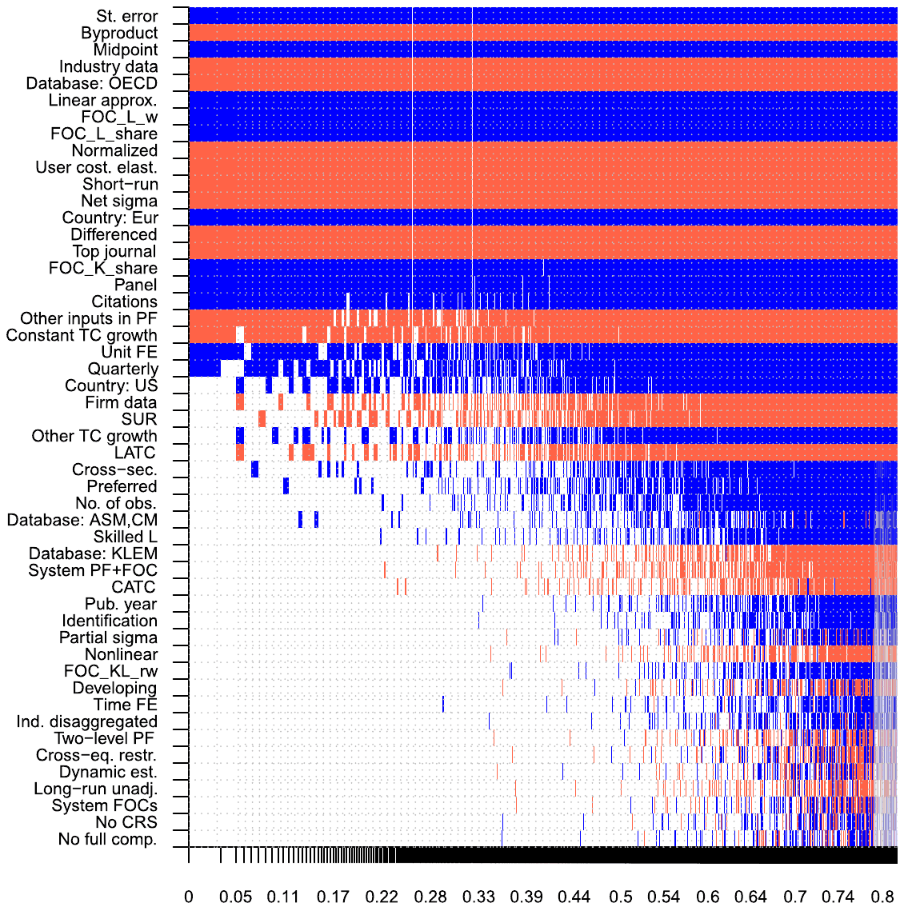
Notes: The response variable is the estimate of the elasticity of capital-labor substitution. Columns denote individual models; variables are sorted by posterior inclusion probability in descending order. FOC = first-order condition. CATC = capital-augmenting technical change. LATC = labor-augmenting technical change. CRS = constant returns to scale. The horizontal axis denotes cumulative posterior model probabilities; only the 5,000 best models are shown. To ensure convergence we employ 100 million iterations and 50 million burn-ins. Blue color (darker in grayscale) = the variable is included and the estimated sign is positive. Red color (lighter in grayscale) = the variable is included and the estimated sign is negative. No color = the variable is not included in the model. Numerical results of the BMA exercise are reported in Table 7. A detailed description of all variables is available in the online appendix.
5.3.2. Specification
A stylized fact in the literature on capital-labor substitution has it that estimations based on the first-order condition for labor deliver larger elasticities than estimations based on the first-order condition for capital; see Fig. 5(a) in Section 3. The BMA analysis corroborates this stylized fact and elaborates on it: when a system of FOCs is used, the results tend to be close to those derived from the FOC for capital. Omitting information from the FOC for capital, in contrast, exaggerates the reported elasticity by 0.2 or more. The FOC for capital thus seems to be more important for proper identification of the elasticity than the FOC for labor. The elasticity also becomes inflated by 0.2 when a linear approximation of the production function (using either the Kmenta or translog approach) is employed. As pointed out by Thursby and Lovell (1978) and León-Ledesma et al. (2010), linear approximations of the production function tend to be biased towards , as an elasticity of one usually serves as the initial point of expansion.
| Response variable: Estimate of | Bayesian model averaging: Post. mean | Bayesian model averaging: Post. SD | Bayesian model averaging: PIP | Frequentist check: Coef. | Frequentist check: Std. er. | Frequentist check: p-value |
|---|---|---|---|---|---|---|
| SE (publication bias) | 0.614 | 0.038 | 1.000 | 0.633 | 0.042 | 0.000 |
| Data characteristics | ||||||
| No. of obs. | 0.003 | 0.009 | 0.107 | |||
| Midpoint | 0.118 | 0.022 | 1.000 | 0.123 | 0.036 | 0.001 |
| Cross-sec. | 0.009 | 0.023 | 0.160 | |||
| Panel | 0.161 | 0.041 | 0.985 | 0.177 | 0.048 | 0.000 |
| Quarterly | 0.070 | 0.060 | 0.642 | |||
| Firm data | −0.033 | 0.049 | 0.363 | |||
| Industry data | −0.191 | 0.026 | 1.000 | −0.191 | 0.064 | 0.003 |
| Country: US | 0.030 | 0.036 | 0.468 | |||
| Country: Eur | 0.119 | 0.029 | 1.000 | 0.103 | 0.051 | 0.043 |
| Developing country | 0.000 | 0.003 | 0.014 | |||
| Database: ASM/CM | 0.004 | 0.016 | 0.071 | |||
| Database: OECD | −0.277 | 0.039 | 1.000 | −0.276 | 0.099 | 0.005 |
| Database: KLEM | −0.003 | 0.014 | 0.042 | |||
| Disaggregated | 0.000 | 0.003 | 0.012 | |||
| Specification | ||||||
| System PF+FOC | −0.002 | 0.014 | 0.039 | |||
| System FOCs | 0.000 | 0.003 | 0.008 | |||
| Nonlinear | −0.001 | 0.011 | 0.016 | |||
| Linear approx. | 0.235 | 0.039 | 1.000 | 0.227 | 0.108 | 0.037 |
| FOC_L_w | 0.278 | 0.023 | 1.000 | 0.261 | 0.023 | 0.000 |
| FOC_KL_rw | 0.000 | 0.005 | 0.015 | |||
| FOC_K_share | 0.230 | 0.064 | 0.993 | 0.212 | 0.253 | 0.402 |
| FOC_L_share | 0.209 | 0.038 | 1.000 | 0.204 | 0.064 | 0.001 |
| Cross-equation restr. | 0.000 | 0.004 | 0.010 | |||
| Normalized | −0.277 | 0.038 | 1.000 | −0.289 | 0.066 | 0.000 |
| Two-level PF | 0.000 | 0.007 | 0.011 | |||
| Partial | 0.001 | 0.012 | 0.017 | |||
| User cost elast. | −0.385 | 0.044 | 1.000 | −0.368 | 0.061 | 0.000 |
| Econometric approach | ||||||
| Dynamic est. | 0.000 | 0.003 | 0.009 | |||
| SUR | −0.027 | 0.041 | 0.348 | |||
| Identification | 0.000 | 0.005 | 0.018 | |||
| Differenced | −0.111 | 0.025 | 1.000 | −0.109 | 0.025 | 0.000 |
| Time FE | 0.000 | 0.006 | 0.013 | |||
| Unit FE | 0.093 | 0.065 | 0.735 | |||
| Short-run | −0.380 | 0.034 | 1.000 | −0.381 | 0.053 | 0.000 |
| Long-run unadj. | 0.000 | 0.002 | 0.009 | |||
| Production function components | ||||||
| Other inputs in PF | −0.103 | 0.054 | 0.852 | −0.128 | 0.070 | 0.068 |
| CATC | −0.001 | 0.007 | 0.038 | |||
| LATC | −0.018 | 0.028 | 0.327 | |||
| Skilled L | 0.006 | 0.029 | 0.061 | |||
| Constant TC growth | −0.078 | 0.040 | 0.844 | −0.101 | 0.038 | 0.009 |
| Other TC growth | 0.029 | 0.045 | 0.332 | |||
| No CRS | 0.000 | 0.002 | 0.008 | |||
| No full comp. | 0.000 | 0.004 | 0.008 | |||
| Net | −0.376 | 0.048 | 1.000 | −0.260 | 0.054 | 0.000 |
| Publication characteristics | ||||||
| Top journal | −0.092 | 0.023 | 0.998 | −0.074 | 0.032 | 0.021 |
| Pub. year | 0.000 | 0.004 | 0.024 | |||
| Citations | 0.033 | 0.014 | 0.916 | 0.037 | 0.018 | 0.040 |
| Preferred est. | 0.005 | 0.014 | 0.154 | |||
| Byproduct | −0.152 | 0.028 | 1.000 | −0.143 | 0.075 | 0.059 |
| Constant | 0.059 | 1.000 | 0.071 | 0.143 | 0.619 | |
| Observations | 3,186 | 3,186 |
Notes: = elasticity of capital-labor substitution, PIP = posterior inclusion probability. SD = standard deviation. FOC = first-order condition. CATC = capital-augmenting technical change. LATC = labor-augmenting technical change. CRS = constant returns to scale. The table shows unconditional moments for BMA. In the frequentist check we include only explanatory variables with PIP > 0.8. The standard errors in the frequentist check are clustered at the study level. A detailed description of all variables is available in the online appendix.
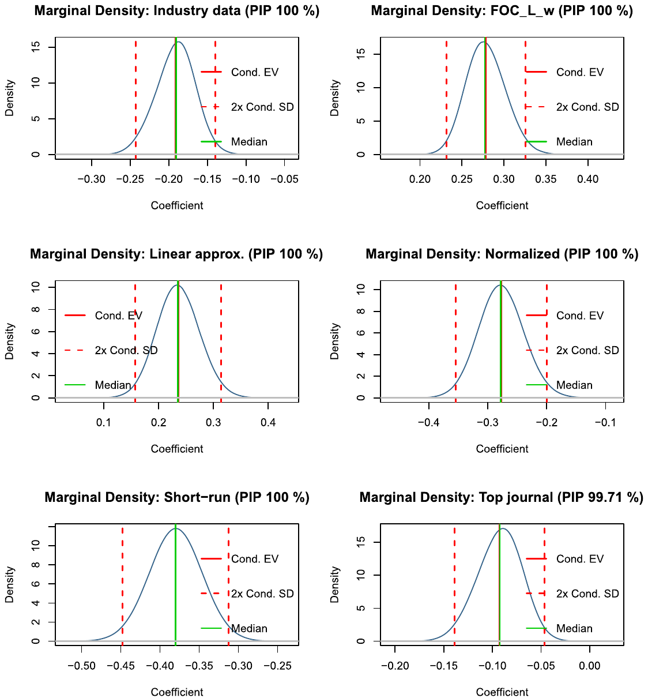
Notes: FOC_L_w = 1 if the elasticity is estimated within the FOC for labor based on the wage rate. The figure depicts the densities of the regression parameters encountered in different regressions in which the corresponding variable is included (that is, the depicted mean and standard deviation are conditional moments, in contrast to those shown in Table 7). For example, the regression coefficient for Linear approximation is positive in all models, irrespective of specification. The most common value of the coefficient is 0.23.
On the other hand, normalization of the production function systematically reduces the estimated elasticity by allowing for the identification of technological change parameters. Finally, if the FOC for capital is estimated in an inverse form (user cost elasticity of capital), the estimates tend to be on average much smaller. These results are robust across all the estimations we run: BMA, FMA, and the frequentist check. A similarly robust result is that the mean implied elasticity is 0.3 when made conditional on three aspects: (i) no publication bias, (ii) no use of cross-country variation in input data, and (iii) not ignoring information from the FOC for capital. We will expand and provide more details on the computation of the implied elasticity at the end of this section.
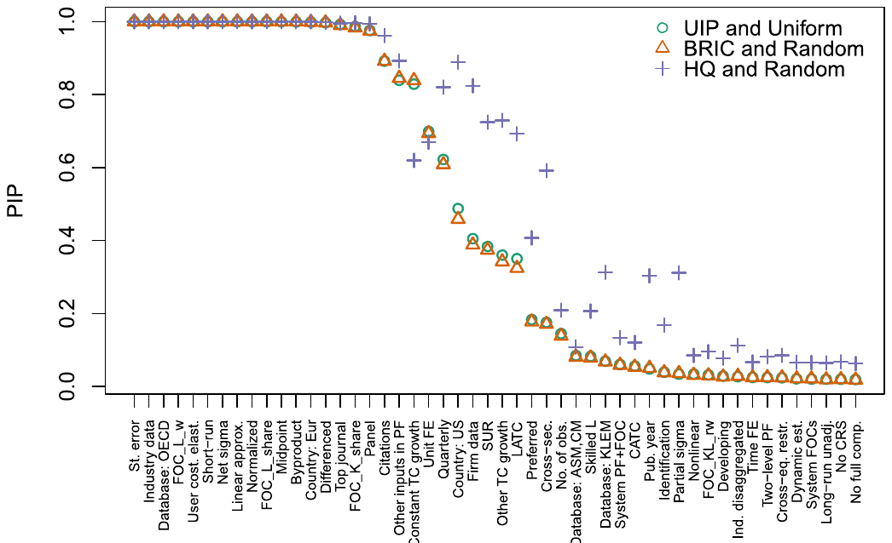
Notes: UIP (unit information prior) and Uniform model prior = priors according to Eicher et al. (2011). BRIC and Random = the benchmark g-prior for parameters with the beta-binomial model prior for the model space, which means that each model size has equal prior probability. HQ prior asymptotically mimics the Hannan-Quinn criterion. PIP = posterior inclusion probability.
5.3.3. Econometric approach
We find little evidence that the econometric approach used in primary studies is responsible for systematic differences in the reported elasticities. Naturally, short-run elasticities are smaller than long-run ones: estimations in differences tend to deliver elasticities that are smaller by 0.1; explicitly short-run estimations tend to deliver elasticities smaller by 0.4. Adjusted and unadjusted long-run estimates do not differ much from each other.
5.3.4. Production function components
The results suggest that assumptions regarding technical change have little systematic effect on the resulting elasticities of substitution. Allowing for capital- or labor-augmenting technological change brings, on average, elasticities similar to the case when Hicks-neutral technological change is assumed. Allowing for constant growth in technological change (in comparison to no growth) decreases the estimate, but only by a small margin. The apparent irrelevance of assumptions on technological change for the estimation of the elasticity of substitution contrasts with Antras (2004), who argues that Hicks-neutral technological change biases the results towards the Cobb-Douglas specification. The irrelevance finding holds for both BMA and FMA and regardless of whether we include labor- and capital-augmenting technological change as separate dummies or jointly in one dummy.
Including other inputs in the production function aside from labor and capital has a negative effect on the resulting size of the elasticity. When the elasticity is estimated in the net form, it tends to be smaller by 0.4 on average, but very few studies pursue this approach.
5.3.5. Publication characteristics
Out of the five variables grouped together as publication characteristics, three are systematically associated with the magnitude of the reported elasticity. First, compared to other outlets, the top five journals in economics tend to publish slightly smaller elasticities. Second, studies that provide larger elasticities tend to receive more citations—potentially, such studies are more useful to researchers trying to justify the use of the Cobb-Douglas production function in their model, but it could also mean that studies reporting larger estimates are of higher quality. Third, the reported elasticity tends to be smaller if it does not represent the central focus of the study but merely a byproduct of a different exercise. One can interpret the finding as further indirect evidence of publication bias against small estimates, or, alternatively, as evidence that more thorough examinations yield larger estimates.
Aside from our baseline BMA, FMA, and frequentist check, we run several sensitivity analyses with respect to different subsamples of data, control variables, priors, and weighting schemes. Regarding priors, Fig. 11 shows that the implied relative importance of the variables changes little when different priors are used for BMA. In the online appendix we also run BMA on weighted data: first, data are weighted by the inverse of the number of estimates reported by each study so that each study has the same weight; second, data are weighted by the inverse of the standard error. Our key results continue to hold in these specifications.
| One-std.-dev. change Effect on | One-std.-dev. change % of best practice | Maximum change Effect on | Maximum change % of best practice | |
|---|---|---|---|---|
| Standard error | 0.117 | 39% | 0.461 | 154% |
| Byproduct | −0.047 | −16% | −0.152 | −51% |
| Midpoint | 0.056 | 19% | 0.588 | 196% |
| Industry data | −0.095 | −32% | −0.191 | −64% |
| Database: OECD | −0.069 | −23% | −0.277 | −92% |
| Linear approx. | 0.062 | 21% | 0.235 | 78% |
| FOC_L_w | 0.132 | 44% | 0.278 | 93% |
| Normalized | −0.061 | −20% | −0.277 | −92% |
| Short-run | −0.083 | −28% | −0.380 | −127% |
| Net | −0.059 | −20% | −0.376 | −125% |
Notes: The table shows ceteris paribus changes in the reported elasticities implied by changes in the variables that reflect the context in which researchers obtain their estimates. For example, increasing the estimate's standard error by one standard deviation is associated with an increase in the estimated elasticity by 0.117, more than a third of the size of the best practice estimate (one conditional on ideal data, method, and publication characteristics, as described in Table 9). Increasing the standard error from the sample minimum to the sample maximum is associated with an increase in the estimated elasticity by 0.461, more than one and a half of the best practice estimate. A detailed description of the variables is available in the online appendix.
| Implied elasticity | 95% confidence interval | |
|---|---|---|
| Best practice | 0.30 | (−0.01, 0.60) |
| Short-run | −0.11 | (−0.38, 0.15) |
| Net | −0.02 | (−0.30, 0.25) |
| Country-level data | 0.50 | (0.18, 0.81) |
| Quarterly data | 0.42 | (0.08, 0.76) |
| Time series | 0.25 | (−0.10, 0.60) |
| Cross-sections | 0.32 | (0.07, 0.56) |
| System of FOCs | 0.35 | (0.07, 0.64) |
Notes: The table shows mean estimates of the elasticity of substitution conditional on data, method, and publication characteristics. The exercise is akin to a synthetic study that uses all information reported in the literature but puts more weight on selected aspects of study design. The result in the first column is conditional on our definition of best practice (see the main text for details). The remaining rows change one aspect in the definition of best practice: for example the second row shows the result for short-run instead of long-run estimates.
5.4. Economic significance and implied elasticity
We close the analysis with a discussion of (i) the economic significance of the variables identified as important by BMA and FMA and (ii) the mean elasticity of substitution implied by the literature after taking into account the pattern that some data and method choices create in the reported estimates. Economic significance is explored in Table 8, which shows the effect on the reported elasticity when we increase the value of the corresponding variable by one standard deviation (the left-hand panel) and from minimum to maximum (the right-hand panel). Increasing from minimum to maximum perhaps makes more sense for dummy variables, while for continuous variables, such as the midpoint of data, the one-standard-deviation change is typically more informative. In the second and fourth column, the table also casts the effects as percentages of the "best-practice" estimate implied by the literature, which we discuss below. It is apparent from the table that the variables with the largest effect on the elasticity are the standard error (publication bias), use of variation at the industry level, FOC for labor (ignoring FOC for capital), normalization of the production function, and the assumption of short-run or net elasticity. Changes in these variables can alter the resulting elasticity by 50% or more.
The mean implied elasticity is explored in Table 9. In essence, we create a synthetic study in which we use all the reported estimates but give different weights to certain aspects of data, methodology, and publication. We have already noted that the implied elasticity is 0.3, when we hold three preferences: the estimate should be conditional on the absence of publication bias, use of variation across industries instead of countries, and use of information from the first-order condition for capital. Next, we augment the list of preferences to construct a best-practice estimate. For the computation we use the results of FMA because, unlike BMA, it allows us to construct confidence intervals around the implied elasticities (linear combinations of FMA coefficients and the chosen values for each variable). We compute fitted values of the elasticity by plugging in sample maxima for variables reflecting best practice in the literature, sample minima for variables reflecting departures from best practice, and sample means for variables where we cannot determine best practice.
We prefer large studies using newer data, so we plug in sample maxima for the number of observations and midpoint of data. We prefer a system of production function together with FOCs for both capital and labor, tied with normalization and cross-equation restrictions. We also prefer the use of factor-augmenting technological change and joint estimation of equations by Zellner's method instead of OLS. As for the publication characteristics, we prefer studies that are highly cited and published in top journals. In contrast, we do not prefer linear approximation, byproduct estimates, elasticities that are supposed to be long-run but are not properly adjusted, and partial elasticities: we plug in zero for these variables. We do not have any strong opinion on the various sources of data or data dimension (whether time series or cross-sectional studies should be used, what data frequency should be employed). Thus, next to the central "best practice" estimate we generate multiple estimates for these data and method choices. We also show implied elasticities for exploiting variation across countries, often used in the literature, and for short-run elasticity, net elasticity, and the use of a system of FOCs without a production function.
The results, shown in Table 9, illustrate the high degree of uncertainty that such an exercise entails: the 95% confidence intervals for all estimates are approximately 0.6 wide. Our central estimate is still 0.3, which means that other aspects of best practice (on top of the three preferences made in the beginning) cancel each other out—even though now the estimate becomes barely statistically significantly different from zero at the 5% level. But even such a conservative estimation rejects the Cobb-Douglas specification in all cases. The implied short-run and net elasticities are close to zero. When one prefers quarterly data instead of showing equal treatment to estimates derived from data of different frequencies, the implied estimate increases to 0.4. A preference for time series data, cross-sectional data, or a system of FOCs without a production function would result in a smaller change in the elasticity. Even a preference for exploiting variation across countries would only take the implied estimate to 0.5, with the upper bound of the 95% confidence interval at 0.8, making the result safely inconsistent with the Cobb-Douglas specification.
6. Concluding remarks
The Cobb-Douglas production function contradicts the data. This is the result we obtain after analyzing 3,186 estimates of the capital-labor substitution elasticity reported in 121 published studies. When we give the same weight to all the different approaches used to identify the elasticity, we find that the value most representative of the literature is 0.5, tightly estimated with the upper bound of the 95% confidence interval at 0.6. The representative value corresponds to the mean reported elasticity corrected for publication bias, a phenomenon that has not been previously addressed in the vast literature on the elasticity of substitution. The representative estimate further shrinks to 0.3 when one imposes the restrictions that identification must come from industry-level instead of aggregated, country-level data and that information from the first-order condition for capital must be considered instead of ignored. The representative estimate stays at 0.3 when we control for 71 aspects of study design and select a best-practice value for each aspect (plugging in mean values where no reasonable choice can be made). Such best-practice elasticity is imprecisely estimated, with the upper bound of the 95% confidence interval still at 0.6. Other researchers will have different opinions on what constitutes best practice and might arrive at a point estimate different from 0.3. But no matter the preferences, after acknowledging publication bias, the Cobb-Douglas production function with the elasticity at 1 becomes indefensible in the light of empirical evidence.
We are not the first to highlight the disconnect between the Cobb-Douglas specification commonly used in macroeconomic models and the empirical literature estimating the elasticity of substitution. Chirinko (2008) and Knoblach et al. (2020) provide useful surveys of portions of the literature, and both studies suggest that the Cobb-Douglas production function is not backed by the available evidence. We argue that after controlling for publication bias and model uncertainty the case against Cobb-Douglas strengthens to the point where one has to warn against the continued use of this convenient simplification. As we show in the Introduction, a structural model built to aid monetary policy is biased from the beginning if it uses an elasticity of one for capital-labor substitution. Computational convenience should yield to the stylized fact established by half a century of meticulous research: capital and labor are gross complements.
Three caveats to the value of our central estimate, 0.3, are in order. First, the elasticities that we collect are unlikely to be independent because they are frequently derived from the same or similar datasets. We partially address this problem by clustering standard errors at both the study and country level when controlling for publication bias and additionally compute wild bootstrap confidence intervals. Second, the value of 0.3 is a mean estimate and certainly does not fit all situations and calibrations. While we are able to address several issues that we see as problems in the literature, in meta-analysis one can only solve methodological problems that have already been addressed by at least one previous study. The value of 0.3 is our best guess conditional on the available literature published prior to 2019, not the definitive point estimate for the elasticity. Third, we do our best to include all published studies estimating the elasticity of substitution, but still we might have missed some. Such an omission will not affect our results much as long as it remains random. We experimented with randomly omitting 50% of our data set, and the main findings continue to hold in such simulations.
Appendix A. Illustrating the effects of publication bias in a Monte Carlo simulation
The impact of publication bias on a naive literature summary and on the working of benchmark meta-analysis tools can be shown in a simple Monte Carlo simulation. We illustrate what happens to the mean of the reported elasticities if some estimates are systematically underreported. To this end we employ the central estimate of the elasticity from Antras (2004), a representative and well-cited study with a point estimate of stemming from a specification with FOC on capital, allowing for biased technological change, and relying on US macroeconomic time series data. The estimation equation reads:
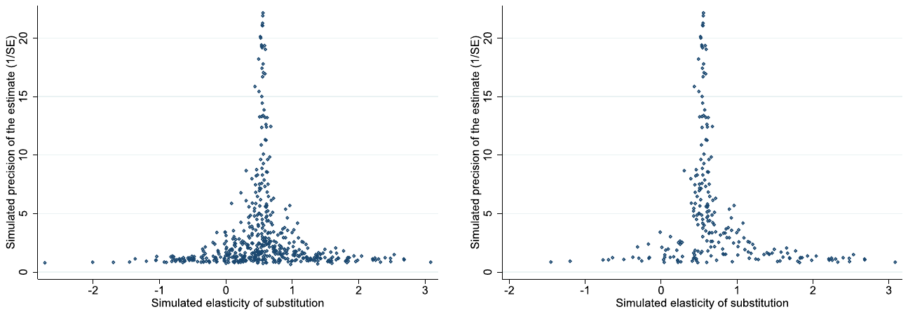
Notes: In the absence of publication bias the scatter plot should resemble an inverted funnel symmetrical around the most precise estimates. The left panel shows estimates from all 500 Monte Carlo draws obtained from the replication of the estimate in Antras (2004) (Table 5, Column I, Row 1) and by adding random noise to the dependent variable, thereby producing a symmetric funnel around Antras's estimate. The right panel shows what happens to the funnel plot if 80% of estimates that are negative or insignificantly different from zero (at a 5% level) are discarded, which results in retaining only 227 observations.
| (1) no filter | (2) drop < 0 | (3) drop 80% of < 0 or insignif ≠ 0 | (4) drop 80% of signif ≠ 1 | (5) drop 80% of < 1.3 | |
|---|---|---|---|---|---|
| (mean) | 0.534 | 0.726 | 0.743 | 0.616 | 0.913 |
| SE (publication bias) | −0.0160 (0.0534) | 0.313*** (0.0492) | 0.499*** (0.0956) | 0.135** (0.0567) | 0.578*** (0.102) |
| Const (mean beyond bias) | 0.548*** (0.00727) | 0.521*** (0.00716) | 0.515*** (0.00922) | 0.550*** (0.0145) | 0.488*** (0.0133) |
| Observations | 500 | 423 | 227 | 391 | 151 |
Notes: The table shows detection of and correction for publication bias in five different scenarios. (1) Reporting all estimates. (2) Dropping all negative estimates of . (3) Dropping 80% of negative or insignificant (at the 5% threshold) estimates. (4) Dropping 80% of estimates that are significantly different from at the 5% level. (5) Dropping 80% of estimates that are smaller than . The original data were obtained from Antras (2004), the specification FOC_K with trend from Table 5.1, Col I, Row 1. The Monte Carlo simulation adds noise to the dependent variable and estimates Antras's model 500 times. ***, **, and * denote statistical significance at the 1%, 5%, and 10% level. Standard errors in parentheses.
For the Monte Carlo simulation we assume this estimate to be close to the unbiased true underlying value of . (Our results would be qualitatively the same if we chose a different study for the simulation.) We set up our data generating process by re-estimating from 500 draws of the Antras (2004) data by adding noise to the dependent variable (with a sample mean of 4.16) via a random error from a Gaussian distribution with . In order to generate the familiar funnel shape for the scatter plot of estimates and standard errors, the variance of the noise term is chosen not to be constant across draws but to vary from 0.0016 to 0.8. Note that the qualitative results of the simulation are independent of this specific parametrization. The funnel would still display a range comparable to our actual dataset shown in Fig. 6, though it would look less pretty. The funnel plot from our 500 simulated estimations (noisy versions of Antras's model) is displayed on the left-hand side of Fig. A1. It has an average with a standard deviation equal to 0.685.
The right-hand panel of Fig. A1 shows how the funnel would change if we filtered out 80% of the simulated estimates that are either negative or insignificantly different from zero. This setup reflects a typical publication bias scenario in which significant and theory-compliant estimates are more likely to be reported. In this scenario, only 227 observations are left, and the funnel becomes asymmetric. In fact, however, it is less asymmetric that the actual funnel plot we observe in the literature (Fig. 6), indicating that publication bias may be even more severe in practice than with the aforementioned filter. The filtered simulated dataset represents what a reviewer of the literature observes. Publication bias drives the observed average elasticity upwards from 0.534 to 0.743 and produces a correlation between point estimates and their standard errors, a correlation that was not present before (column 1 in Table A1).
Table A1 shows a funnel asymmetry test, a regression of estimated elasticities on the corresponding standard errors (as explained in Section 4) for different scenarios of bias. Column 1 refers to the unbiased symmetric funnel in Fig. A1. The test indicates no bias, and the estimated mean beyond bias is close to the true mean. If all negative estimates are dropped (column 2), the naive mean increases to 0.726. The test detects publication bias and uncovers a mean of 0.521, close to the true one. Column 3 refers to the asymmetric funnel in the right-hand panel of Fig. A1. Again the test detects publication bias and estimates the true mean fairly precisely. Columns 4 and 5 show that the working of the test does not hinge on the selection threshold of zero. If for example the Cobb-Douglas specification with serves as a benchmark for researchers, in the way that they discard 80% of all estimates that are significantly different from 1 at a 5% level, the mean of the reported estimates would also be biased upwards and meta-analysis tests again do a good job in detecting the bias. Even for the extreme example of column 5, where we drop 80% of estimates with and the uncorrected mean increases to 0.913, the funnel asymmetry test estimates the underlying true well.
References
Some entries below were printed without a link. Where a Crossref record matches one and no other record plausibly could, its DOI is shown; ambiguous references are left as they were printed.
- van Aert, R.C., van Assen, M., 2021. Correcting for publication bias in a meta-analysis with the p-uniform* method. Working paper. Tilburg University.
- Alexander, L.B., Imai, T., Vieider, F.M., Camerer, C., 2021. Meta-Analysis of Empirical Estimates of Loss-Aversion. CESifo Working Paper Series 8848, CESifo. 10.2139/ssrn.3772089
- Alinaghi, N., Reed, W.R., 2018. Meta-analysis and publication bias: how well does the FAT-PET-PEESE procedure work? Research synthesis methods 9 (2), 285–311. 10.1002/jrsm.1298
- Amini, S.M., Parmeter, C.F., 2012. Comparison of model averaging techniques: assessing growth determinants. Journal of Applied Econometrics 27 (5), 870–876. 10.1002/jae.2288
- Andrews, I., Kasy, M., 2019. Identification of and correction for publication bias. American Economic Review 109 (8), 2766–2794. 10.1257/aer.20180310
- Antras, P., 2004. Is the US aggregate production function Cobb-Douglas? New estimates of the elasticity of substitution. Contributions in Macroeconomics 4 (1), 1–36.
- Arrow, K.J., Chenery, H.B., Minhas, B.S., Solow, R.M., 1961. Capital-labor substitution and economic efficiency. Review of Economics and Statistics 43 (3), 225–250. 10.2307/1927286
- Ashenfelter, O., Greenstone, M., 2004. Estimating the value of a statistical life: the importance of omitted variables and publication bias. American Economic Review 94 (2), 454–460. 10.1257/0002828041301984
- Astakhov, A., Havranek, T., Novak, J., 2019. Firm size and stock returns: a quantitative survey. Journal of Economic Surveys 33 (5), 1463–1492. 10.1111/joes.12335 Full text on this site
- Autor, D., Dorn, D., Katz, L.F., Patterson, C., Van Reenen, J., 2017. Concentrating on the fall of the labor share. American Economic Review 107 (5), 180–185. 10.1257/aer.p20171102
- Babecky, J., Havranek, T., 2014. Structural reforms and growth in transition. The Economics of Transition 22 (1), 13–42. 10.1111/ecot.12029 Full text on this site
- Bajzik, J., Havranek, T., Irsova, Z., Schwarz, J., 2020. Estimating the Armington elasticity: the importance of study design and publication bias. Journal of International Economics 127 (C), 103383. 10.1016/j.jinteco.2020.103383 Full text on this site
- Baker, R.D., Jackson, D., 2013. Meta-analysis inside and outside particle physics: two traditions that should converge? Research Synthesis Methods 4 (2), 109–124. 10.1002/jrsm.1065
- Berndt, E.R., 1976. Reconciling alternative estimates of the elasticity of substitution. Review of Economics and Statistics 58 (1), 59–68. 10.2307/1936009
- Blanco-Perez, C., Brodeur, A., 2020. Publication bias and editorial statement on negative findings. Economic Journal 130 (629), 1226–1247. 10.1093/ej/ueaa011
- Bom, P.R.D., Rachinger, H., 2019. A kinked meta-regression model for publication bias correction. Research Synthesis Methods 10 (4), 497–514. 10.1002/jrsm.1352
- Box, G.E., Cox, D.R., 1964. An analysis of transformations. Journal of the Royal Statistical Society: Series B (Methodological) 26 (2), 211–243. 10.1111/j.2517-6161.1964.tb00553.x
- Brodeur, A., Cook, N., Heyes, A., 2020. Methods matter: P-hacking and causal inference in economics. American Economic Review 110 (11), 3634–3660. 10.1257/aer.20190687
- Brodeur, A., Lé, M., Sangnier, M., Zylberberg, Y., 2016. Star wars: the empirics strike back. American Economic Journal: Applied Economics 8 (1), 1–32. 10.1257/app.20150044
- Bruno, M., Sachs, J., 1982. Input price shocks and the slowdown in economic growth: the case of UK manufacturing. Review of Economic Studies 49 (5), 679–705. 10.2307/2297185
- Bruns, S.B., Ioannidis, J.P.A., 2016. p-Curve and p-hacking in observational research. PloS ONE 11 (2), e0149144. 10.1371/journal.pone.0149144
- Cameron, A.C., Gelbach, J.B., Miller, D.L., 2008. Bootstrap-based improvements for inference with clustered errors. Review of Economics and Statistics 90 (3), 414–427. 10.1162/rest.90.3.414
- Cameron, A.C., Gelbach, J.B., Miller, D.L., 2011. Robust inference with multiway clustering. Journal of Business & Economic Statistics 29 (2), 238–249. 10.1198/jbes.2010.07136
- Campos, N.F., Fidrmuc, J., Korhonen, I., 2019. Business cycle synchronisation and currency unions: a review of the econometric evidence using meta-analysis. International Review of Financial Analysis 61 (C), 274–283. 10.1016/j.irfa.2018.11.012
- Cantore, C., Ferroni, F., Leon-Ledesma, M.A., 2017. The dynamics of hours worked and technology. Journal of Economic Dynamics and Control 82, 67–82. 10.1016/j.jedc.2017.05.009
- Cantore, C., León-Ledesma, M., McAdam, P., Willman, A., 2014. Shocking stuff: technology, hours, and factor substitution. Journal of the European Economic Association 12 (1), 108–128. 10.1111/jeea.12038
- Cantore, C., Levine, P., Pearlman, J., Yang, B., 2015. CES technology and business cycle fluctuations. Journal of Economic Dynamics and Control 61 (C), 133–151. 10.1016/j.jedc.2015.09.006
- Card, D., Krueger, A.B., 1995. Time-series minimum-wage studies: a meta-analysis. American Economic Review 85 (2), 238–243.
- Cazachevici, A., Havranek, T., Horvath, R., 2020. Remittances and economic growth: a meta-analysis. World Development 134, 105021. 10.1016/j.worlddev.2020.105021 Full text on this site
- Chirinko, R.S., 2002. Corporate taxation, capital formation, and the substitution elasticity between labor and capital. National Tax Journal 55 (2), 339–355. 10.17310/ntj.2002.2.07
- Chirinko, R.S., 2008. σ: the long and short of it. Journal of Macroeconomics 30 (2), 671–686. 10.1016/j.jmacro.2007.10.010
- Chirinko, R.S., Fazzari, S.M., Meyer, A.P., 2011. A new approach to estimating production function parameters: the elusive capital–labor substitution elasticity. Journal of Business & Economic Statistics 29 (4), 587–594. 10.1198/jbes.2011.08119
- Chirinko, R.S., Mallick, D., 2017. The substitution elasticity, factor shares, and the low-frequency panel model. American Economic Journal: Macroeconomics 9 (4), 225–253. 10.1257/mac.20140302
- Christensen, G., Miguel, E., 2018. Transparency, reproducibility, and the credibility of economics research. Journal of Economic Literature 56 (3), 920–980. 10.1257/jel.20171350
- Chwelos, P., Ramirez, R., Kraemer, K.L., Melville, N.P., 2010. Does technological progress alter the nature of information technology as a production input? New evidence and new results. Information Systems Research 21 (2), 392–408. 10.1287/isre.1090.0229
- Cummins, J.G., Hassett, K.A., 1992. The effects of taxation on investment: new evidence from firm level panel data. National Tax Journal 45 (3), 243–251. 10.1086/ntj41788967
- DeLong, J.B., Lang, K., 1992. Are all economic hypotheses false? Journal of Political Economy 100 (6), 1257–1272. 10.1086/261860
- Diamond, P., McFadden, D., Rodriguez, M., 1978. Measurement of the elasticity of factor substitution and bias of technical change. In: Fuss, M., McFadden, D. (Eds.), Contributions to Economic Analysis, Vol. 2. Elsevier, pp. 125–147.
- Dissou, Y., Karnizova, L., Sun, Q., 2015. Industry-level econometric estimates of energy-capital-labor substitution with a nested CES production function. Atlantic Economic Journal 43 (1), 107–121. 10.1007/s11293-014-9443-1
- Doucouliagos, C., Stanley, T.D., 2013. Are all economic facts greatly exaggerated? Theory competition and selectivity. Journal of Economic Surveys 27 (2), 316–339. 10.1111/j.1467-6419.2011.00706.x
- Doucouliagos, H., Paldam, M., Stanley, T., 2018. Skating on thin evidence: implications for public policy. European Journal of Political Economy 54 (C), 16–25. 10.1016/j.ejpoleco.2018.03.004
- Duffy, J., Papageorgiou, C., 2000. A cross-country empirical investigation of the aggregate production function specification. Journal of Economic Growth 5 (1), 87–120. 10.1023/a:1009830421147
- Eden, M., Gaggl, P., 2015. On the welfare implications of automation. Policy Research Working Paper 7487. The World Bank. 10.1596/1813-9450-7487
- Eicher, T.S., Papageorgiou, C., Raftery, A.E., 2011. Default priors and predictive performance in Bayesian model averaging, with application to growth determinants. Journal of Applied Econometrics 26 (1), 30–55. 10.1002/jae.1112
- Eisner, R., 1969. Tax policy and investment behavior: comment. American Economic Review 59 (3), 379–388.
- Eisner, R., Nadiri, M.I., 1968. Investment behavior and neo-classical theory. Review of Economics and Statistics 50 (3), 369–382. 10.2307/1937931
- Elliott, G., Kudrin, N., Wuthrich, K., 2021. Detecting p-hacking. Econometrica. Forthcoming.
- Erceg, C.J., Guerrieri, L., Gust, C., 2008. Trade adjustment and the composition of trade. Journal of Economic Dynamics and Control 32 (8), 2622–2650. 10.1016/j.jedc.2007.09.015
- Furukawa, C., 2021. Publication bias under aggregation frictions: theory, evidence, and a new correction method. MIT. Unpublished paper.
- Gechert, S., Rannenberg, A., 2018. Which fiscal multipliers are regime-dependent? A meta-regression analysis. Journal of Economic Surveys 32 (4), 1160–1182. 10.1111/joes.12241
- Gerber, A., Malhotra, N., 2008. Do statistical reporting standards affect what is published? Publication bias in two leading political science journals. Quarterly Journal of Political Science 3 (3), 313–326. 10.1561/100.00008024
- Glover, A., Short, J., 2020a. Can capital deepening explain the global decline in labor's share? Review of Economic Dynamics 35, 35–53. 10.1016/j.red.2019.04.007
- Glover, A., Short, J., 2020b. Demographic Origins of the Decline in Labor's Share. BIS working papers no. 874. Bank for International Settlements.
- Grossman, G.M., Helpman, E., Oberfield, E., Sampson, T., 2017. The productivity slowdown and the declining labor share: a neoclassical exploration. NBER Working Papers 23853. National Bureau of Economic Research. 10.3386/w23853
- Hampl, M., Havranek, T., 2020. Central bank equity as an instrument of monetary policy. Comparative Economic Studies 62 (1), 49–68. 10.1057/s41294-019-00092-1 Full text on this site
- Hampl, M., Havranek, T., Irsova, Z., 2020. Foreign capital and domestic productivity in the Czech Republic: a meta-regression analysis. Applied Economics 52 (18), 1949–1958. 10.1080/00036846.2020.1726864 Full text on this site
- Hansen, B.E., 2007. Least squares model averaging. Econometrica 75 (4), 1175–1189. 10.1111/j.1468-0262.2007.00785.x
- Havranek, T., 2015. Measuring intertemporal substitution: the importance of method choices and selective reporting. Journal of the European Economic Association 13 (6), 1180–1204.
- Havranek, T., Herman, D., Irsova, Z., 2018a. Does daylight saving save electricity? A meta-analysis. The Energy Journal 39 (2), 35–61. 10.5547/01956574.39.2.thav Full text on this site
- Havranek, T., Horvath, R., Irsova, Z., Rusnak, M., 2015. Cross-country heterogeneity in intertemporal substitution. Journal of International Economics 96 (1), 100–118. 10.1016/j.jinteco.2015.01.012 Full text on this site
- Havranek, T., Irsova, Z., 2010. Meta-analysis of intra-industry FDI spillovers: updated evidence. Czech Journal of Economics and Finance 60 (2), 151–174.
- Havranek, T., Irsova, Z., 2011. Estimating vertical spillovers from FDI: why results vary and what the true effect is. Journal of International Economics 85 (2), 234–244. 10.1016/j.jinteco.2011.07.004 Full text on this site
- Havranek, T., Irsova, Z., 2012. Survey article: publication bias in the literature on foreign direct investment spillovers. Journal of Development Studies 48 (10), 1375–1396. 10.1080/00220388.2012.685721 Full text on this site
- Havranek, T., Irsova, Z., 2017. Do borders really slash trade? A meta-analysis. IMF Economic Review 65 (2), 365–396. 10.1057/s41308-016-0001-5 Full text on this site
- Havranek, T., Irsova, Z., Vlach, T., 2018b. Measuring the income elasticity of water demand: the importance of publication and endogeneity biases. Land Economics 94 (2), 259–283. 10.3368/le.94.2.259 Full text on this site
- Havranek, T., Irsova, Z., Zeynalova, O., 2018c. Tuition fees and university enrolment: a meta-regression analysis. Oxford Bulletin of Economics and Statistics 80 (6), 1145–1184. 10.1111/obes.12240 Full text on this site
- Havranek, T., Rusnak, M., Sokolova, A., 2017. Habit formation in consumption: a meta-analysis. European Economic Review 95, 142–167. 10.1016/j.euroecorev.2017.03.009 Full text on this site
- Havranek, T., Sokolova, A., 2020. Do consumers really follow a rule of thumb? Three thousand estimates from 144 studies say 'probably not'. Review of Economic Dynamics 35, 97–122. 10.1016/j.red.2019.05.004 Full text on this site
- Havranek, T., Stanley, T.D., Doucouliagos, H., Bom, P., Geyer-Klingeberg, J., Iwasaki, I., Reed, W.R., Rost, K., van Aert, R.C.M., 2020. Reporting guidelines for meta-analysis in economics. Journal of Economic Surveys 34 (3), 469–475. 10.1111/joes.12363 Full text on this site
- Hicks, J.R., 1932. Marginal productivity and the principle of variation. Economica 35, 79–88. 10.2307/2548977
- Humphrey, D.B., Moroney, J.R., 1975. Substitution among capital, labor, and natural resource products in American manufacturing. Journal of Political Economy 83 (1), 57–82. 10.1086/260306
- Imai, T., Rutter, T.A., Camerer, C.F., 2021. Meta-analysis of present-bias estimation using convex time budgets. Economic Journal 131 (636), 1788–1814. 10.1093/ej/ueaa115
- Ioannidis, J.P., Stanley, T.D., Doucouliagos, H., 2017. The power of bias in economics research. Economic Journal 127 (605), 236–265. 10.1111/ecoj.12461
- Irsova, Z., Havranek, T., 2010. Measuring bank efficiency: a meta-regression analysis. Prague Economic Papers 2010 (4), 307–328.
- Jorgenson, D.W., 2007. 35 Sector KLEM. Harvard Dataverse.
- Karabarbounis, L., Neiman, B., 2014. The global decline of the labor share. The Quarterly Journal of Economics 129 (1), 61–103. 10.1093/qje/qjt032
- Kilponen, J., Orjasniemi, S., Ripatti, A., Verona, F., 2016. The Aino 2.0 Model. Bank of Finland Research Discussion Paper 16. Bank of Finland. 10.2139/ssrn.2795479
- Klump, R., de La Grandville, O., 2000. Economic growth and the elasticity of substitution: two theorems and some suggestions. American Economic Review 90 (1), 282–291. 10.1257/aer.90.1.282
- Klump, R., McAdam, P., Willman, A., 2007. Factor substitution and factor-augmenting technical progress in the United States: a normalized supply-side system approach. Review of Economics and Statistics 89 (1), 183–192. 10.1162/rest.89.1.183
- Klump, R., McAdam, P., Willman, A., 2012. The normalized CES production function: theory and empirics. Journal of Economic Surveys 26 (5), 769–799. 10.1111/j.1467-6419.2012.00730.x
- Kmenta, J., 1967. On estimation of the CES production function. International Economic Review 8 (2), 180–189. 10.2307/2525600
- Knoblach, M., Rossler, M., Zwerschke, P., 2020. The elasticity of substitution between capital and labour in the US economy: a meta-regression analysis. Oxford Bulletin of Economic and Statistics 82 (1), 62–82. 10.1111/obes.12312
- Koh, D., Santaeulàlia-Llopis, R., Zheng, Y., 2016. Labor Share Decline and Intellectual Property Products Capital. Working Papers 927. Barcelona Graduate School of Economics.
- Krusell, P., Ohanian, L.E., Roos-Rull, J.-V., Violante, G.L., 2000. Capital-skill complementarity and inequality: a macroeconomic analysis. Econometrica 68 (5), 1029–1053. 10.1111/1468-0262.00150
- de La Grandville, O., 1989. In quest of the Slutsky diamond. American Economic Review 79 (3), 468–481.
- León-Ledesma, M.A., McAdam, P., Willman, A., 2010. Identifying the elasticity of substitution with biased technical change. American Economic Review 100 (4), 1330–1357. 10.1257/aer.100.4.1330
- Madigan, D., York, J., 1995. Graphical models for discrete data. International Statistical Review 63 (2), 215–232. 10.2307/1403615
- Matousek, J., Havranek, T., Irsova, Z., 2021. Individual discount rates: a meta-analysis of experimental evidence. Experimental Economics. https://doi.org/10.1007/s10683-021-09716-9. Forthcoming. Full text on this site
- McCloskey, D.N., Ziliak, S.T., 2019. What quantitative methods should we teach to graduate students? A comment on Swann's is precise econometrics an illusion? Journal of Economic Education 50 (4), 356–361. 10.1080/00220485.2019.1654957
- Nekarda, C.J., Ramey, V.A., 2013. The Cyclical Behavior of the Price-Cost Markup. NBER Working Paper 19099. National Bureau of Economic Research. 10.3386/w19099
- Nerlove, M., 1967. Recent empirical studies of the CES and related production functions. In: Brown, M. (Ed.), The Theory and Empirical Analysis of Production. NBER, pp. 55–136.
- Oberfield, E., Raval, D., 2014. Micro data and macro technology. NBER Working Paper 20452. National Bureau of Economic Research. 10.3386/w20452
- Piketty, T., 2014. Capital in the 21st Century. Harvard University Press, Cambridge, MA.
- Robinson, J., 1933. Economics of Imperfect Competition. The Macmillan Company, New York.
- Rognlie, M., 2014. A note on Piketty and diminishing returns to capital. MIT. Unpublished paper.
- Roodman, D., 2019. BOOTTEST: Stata Module to Provide Fast Execution of the Wild Bootstrap with Null Imposed. Statistical Software Components from Boston College Department of Economics.
- Rusnak, M., Havranek, T., Horvath, R., 2013. How to solve the price puzzle? A meta-analysis. Journal of Money, Credit and Banking 45 (1), 37–70. 10.1111/j.1538-4616.2012.00561.x Full text on this site
- Semieniuk, G., 2017. Piketty's elasticity of substitution: a critique. Review of Political Economy 29 (1), 64–79. 10.1080/09538259.2016.1244916
- Smith, J., 2008. That elusive elasticity and the ubiquitous bias: is panel data a panacea? Journal of Macroeconomics 30 (2), 760–779. 10.1016/j.jmacro.2007.06.002
- Solow, R.M., 1956. A contribution to the theory of economic growth. Quarterly Journal of Economics 70 (1), 65–94. 10.2307/1884513
- Stanley, T.D., 2001. Wheat from chaff: meta-analysis as quantitative literature review. Journal of Economic Perspectives 15 (3), 131–150. 10.1257/jep.15.3.131
- Stanley, T.D., 2005. Beyond publication bias. Journal of Economic Surveys 19 (3), 309–345. 10.1111/j.0950-0804.2005.00250.x
- Stanley, T.D., 2008. Meta-regression methods for detecting and estimating empirical effects in the presence of publication selection. Oxford Bulletin of Economics and Statistics 70 (1), 103–127. 10.1111/j.1468-0084.2007.00487.x
- Stanley, T.D., Doucouliagos, H., 2010. Picture this: a simple graph that reveals much ado about research. Journal of Economic Surveys 24 (1), 170–191. 10.1111/j.1467-6419.2009.00593.x
- Stanley, T.D., Doucouliagos, H., 2014. Meta-regression approximations to reduce publication selection bias. Research Synthesis Methods 5 (1), 60–78. 10.1002/jrsm.1095
- Stanley, T.D., Doucouliagos, H., 2017. Neither fixed nor random: weighted least squares meta-regression. Research Synthesis Methods 8 (1), 19–42. 10.1002/jrsm.1211
- Steel, M.F.J., 2020. Model averaging and its use in economics. Journal of Economic Literature 58 (3), 644–719. 10.1257/jel.20191385
- Thursby, J.G., Lovell, C.K., 1978. An investigation of the Kmenta approximation to the CES function. International Economic Review 19 (2), 363–377. 10.2307/2526306
- Turnovsky, S.J., 2002. Intertemporal and intratemporal substitution, and the speed of convergence in the neoclassical growth model. Journal of Economic Dynamics and Control 26 (9–10), 1765–1785. 10.1016/s0165-1889(01)00094-x
- Ugur, M., Churchill, S.A., Luong, H.M., 2020. What do we know about R&D spillovers and productivity? Meta-analysis evidence on heterogeneity and statistical power. Research Policy 49 (1). 10.1016/j.respol.2019.103866
- Van der Werf, E., 2008. Production functions for climate policy modeling: an empirical analysis. Energy Economics 30 (6), 2964–2979. 10.1016/j.eneco.2008.05.008
- Xue, X., Reed, W.R., Menclova, A., 2020. Social capital and health: a meta-analysis. Journal of Health Economics 72 (C). 10.1016/j.jhealeco.2020.102317
- Young, A.T., 2013. US elasticities of substitution and factor augmentation at the industry level. Macroeconomic Dynamics 17 (4), 861–897. 10.1017/s1365100511000733
- Zarembka, P., 1970. On the empirical relevance of the CES production function. Review of Economics and Statistics 52 (1), 47–53. 10.2307/1927596
- Zigraiova, D., Havranek, T., 2016. Bank competition and financial stability: much ado about nothing? Journal of Economic Surveys 30 (5), 944–981. 10.1111/joes.12131 Full text on this site
- Zigraiova, D., Havranek, T., Irsova, Z., Novak, J., 2021. How puzzling is the forward premium puzzle? A meta-analysis. European Economic Review 134, 103714. 10.1016/j.euroecorev.2021.103714 Full text on this site
ENDNOTES
- Publication bias in economics has also been recently discussed, among others, by Havranek (2015), Brodeur et al. (2016), Bruns and Ioannidis (2016), Havranek and Irsova (2017), Havranek et al. (2017), Christensen and Miguel (2018), Astakhov et al. (2019), Bajzik et al. (2020), Blanco-Perez and Brodeur (2020), Brodeur et al. (2020), Cazachevici et al. (2020), Imai et al. (2021), Matousek et al. (2021), and Zigraiova et al. (2021).
- A more precise label for publication bias is therefore "selective reporting," but we use the former, more common one to maintain consistency with previous studies on the topic, such as DeLong and Lang (1992), Card and Krueger (1995), and Ashenfelter and Greenstone (2004).
- Other studies on publication bias in economics include, among others, Stanley (2001), Stanley (2008), Havranek and Irsova (2010), Irsova and Havranek (2010), Havranek and Irsova (2011), Havranek and Irsova (2012), Doucouliagos and Stanley (2013), Babecky and Havranek (2014), Stanley and Doucouliagos (2014), Alinaghi and Reed (2018), Doucouliagos et al. (2018), Gechert and Rannenberg (2018), Campos et al. (2019), Hampl et al. (2020), Hampl and Havranek (2020), Ugur et al. (2020), Xue et al. (2020), Alexander et al. (2021), and Elliott et al. (2021).
- If a simple OLS brought results similar to model averaging, we could simplify the analysis and just present OLS. But in our case a simple OLS regression including all variables would yield results quite different from Bayesian model averaging: 29% of the variables would lose their statistical significance (or importance in the Bayesian setting), while 17% of the variables would now be wrongly significant. The median change in the magnitude of the estimated coefficients for these variables would reach 133% in absolute value. (But note that our key results concerning publication bias and the best-guess elasticity would continue to hold.) We thus opt for the more complex but statistically more appropriate approach.